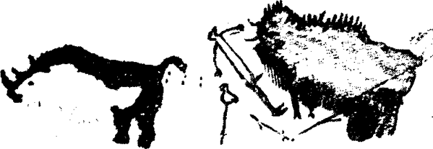
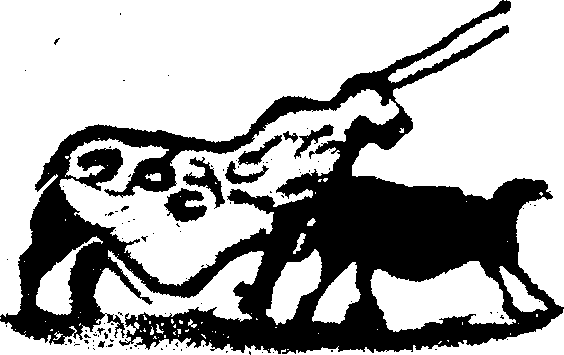
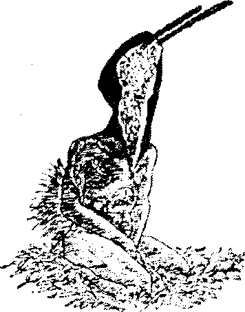
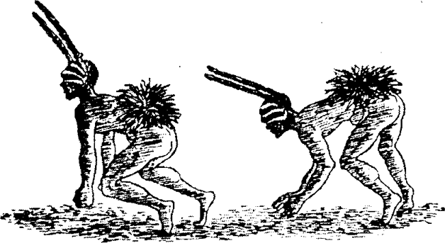
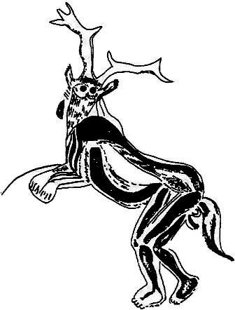
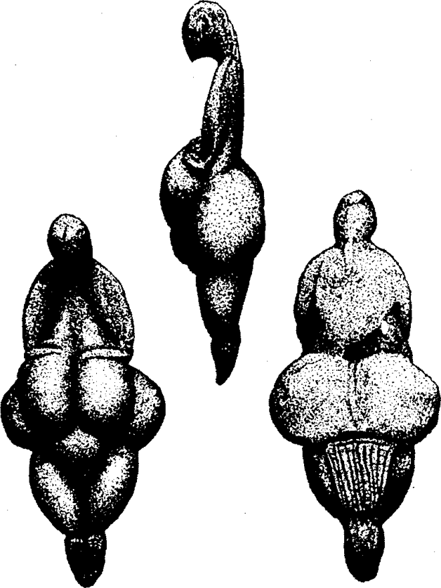
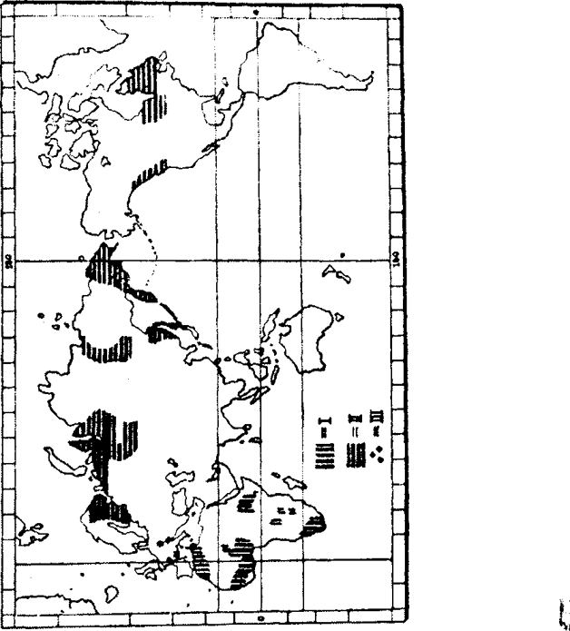

Güney Fransa’da, Dordogne bölgesindeki paleolitik avcıların doğal tapınaklarını ziyaret etmek en etkileyici insan deneyimlerinden biri. İnsanın kendisini başkalaştırdığı son dönemin eseri olan karayollarında rahatça seyahat ettikten sonra, buzul çağının sona erdiği bin yıllarda insan yaşamının nasıl olabileceğini hayal etmekte zorluk çekiliyor. Henüz yay ve oku bile olmayan yapılı kabileliler misk öküzünü, ren geyiğini, yünlü gergedanları ve mamutları, donmuş kutup tundralarından oluşan bu bölgede bolca bulunan hayvanları uçurumdan yuvarlıyor ve ucu sivriltilmiş çubuklar ve taşlarla kesiyorlar -günümüzün yumuşak insancıllığı ile geçmişin masalsı zıtlığı arasındaki fark o kadar büyük ki böyle bir geçmişin gerçekten yaşanıp yaşanmadığında kuşkular doğuruyor. Paris’ten güneye doğru gelirken Chartres katedralinde duranlar, heykelli kapılar ve vitraylı pencerelerde uzak ortaçağların ikonografisini günümüze taşıyan on iki, on üçüncü yüzyılın parıltısını görüyorlar. Rhone-Avignon, Orange, Nimes ve Arles yoluyla gelenler çok daha farklı bir stilde tapınaklar, suyolları ve sütunlar görecekler. Çok dayanıklı taşlardan yapılan bu yapıtlar Avrupa uygarlığının katedrallerden de eski bir dönemine tanıklık ediyorlar: Roma’ya. İki bin yıl önce Ovidius dünyanın mitolojik tarihini anlattığı Metamorfozlar’ı yazıyor ve Roma yurttaşı İsa, Beytlehem’de dünyaya geliyordu; geleneğe göre yerel paganların her yıl kurban ettikleri ve gene dirilen ilahları Adonis’le ilişkilendirdikleri bir mağarada doğmuştu. Görece yakın sayılacak geçmişin turistik, edebi ve arkeolojik deneyimlerinden sonra büyük bir adım atmak gerekiyor; Dordogne mağaralarında akıl ve yürek geçmişe doğru gerçekten büyük bir adım atıyor.
Lascaux avcılık çağı tapınağının odalarında -‘paleolitiğin Şistine Chapel’i olarak adlandırılmıştır- ilahi deneyim Chertres veya Vatikan’daki gibi insan biçimleriyle (antropomorfik) değil, hayvan biçimiyle (theriomorfik) yansıtılmıştır. Başın üstünde, noktalı tavanlarda harika sıçrayışlı boğalar vardır ve duvarlar koca mağarayı mutlu bir av alanına çeviren hayvan görüntüleriyle doludur. Suda yüzdüğü anlaşılan erkek geyik sürüsü; tüylü, iri yarı cinsinden midilli sürüsü, hamile dişileriyle hareket ve canlılık dolu; Avrupa’da binlerce yıldır görülmeyen bizon türü. Bu muhteşem sürüler arasında çok garip, çekici bir şekil vardır: paleolitik çağda bile dünyada bulunmamış olan bir hayvan figürü. İki uzun, dik boynuz alnından ileri doğru uzanıyor, bir böceğin antenleri veya bir çift banderilla gibi. Koca karnı neredeyse yere değecek. Bütün bu mucizevi görüntünün ön plana çıkarttığı hayvan o, büyücü-yabani.371

Lascaux’un büyücü-yabanisi
Avcı büyüsünün taş devri katedralindeki gizemi hissettiren bir başka resim daha var; doğal bir çıkıntı veya gizemli kilise bodrumu gibi, mağaranın ana taban düzleminden aşağıda, uzanılması zor ve ters bir yerde. Kocaman bir bizon, anüsünden girip cinsel organından çıkarak bağırsaklarını dışarı dökmüş bir mızrakla zayıf bir erkeğin karşısında duruyor. Erkek (mağaradaki tek kaba desen ve tek insan) şaman transı durumunda. Kuş maskesi takmış, dik fallusu boğaya dönük. Yerde ayaklarının dibinde bir mızrak-sopa var, yanında da tepesinde kuş imgesi bulunan bir büyücü değneği veya asası duruyor. Bu cılız şamanın arkasında, yürüyüp giderken dışkıladığı anlaşılan büyük bir gergedan görülüyor.372

Lascaux tabanındaki şekiller
Bilim adamları arasında bu resim üstüne epeyce bir tartışma oldu ve genel kabul gören görüşe göre bir av kazasını gösteriyor. Abbe Breuil gibi bir yetkin bilimadamı bile felaketin nedeninin gergedan olabileceğini söyleyerek bu görüşe katılıyor.373 Benim görüşüme göre, resimlerin büyüsel sonuç olarak temsil ettiği görüntülerin yaşanmasının beklendiği bir mağarada en gizli, kutsal köşeye bir kaza çizilmiş olamaz. İnsan kuş maskesi takıyor ve elleri insan elinden çok kuş gibi. Şaman olduğu kesin ve bugüne kadar uzanan şamanlık edebiyatında, Sibirya’dan Kuzey Amerika’ya kadar gördüğümüz gibi, kuş kostümü ve başkalaşıp kuş biçimine girmesi çok tanıdık bir özellik. Ayrıca Polinezyalı Maui ve azman geyik öyküsünden öğrendiğimiz gibi büyücünün fallusunun özel güçleri vardır. Avustralya’da hala uygulanan bir ritte ölümcül fallus riti ‘işaret eden kemik’ olarak bilinir. Bu ritin bir çeşidini Geza Róheim anlatmıştır:
“Kara büyü veya kötülük büyüsü Avustralya’da öncelikle fallusa değindir... Eğer bir erkek kendisine kötü büyü yapılıp ‘kemik’lenirse bunu rüyasında görecektir. Önce yerde bir yarık, çukur görür, sonra bu açıklıktan iki veya üç kişi ona doğru gelir. Yaklaşınca gövdelerinden bir kemik çıkarırlar. Kemik husyeleriyle anüs arasındaki etin içinden çıkar. Büyücü kurbanını gerçekten ‘kemiklemeden’ önce, kendi penis veya anüsünden aldığı meni veya dışkıyı havaya serperek onu uyutur. Kemiği kullanan adam ikinci bir penis çıkıyormuş gibi onu penisinin altına tutar.

Tören maskesi, boynuzlar işaret-eden-sopa biçiminde. Spencer ve Giller’den.
Pindupiler kara büyüye genel olarak erati derler, özel bir türü kujur-punganyi (‘kötü-iş’) olarak tanımlanır. Bir kaç adam işaret eden çubuğu veya kemiği iki elleriyle tutarlar, aşağı eğilerek, ucu arkaya doğru, büyüsel kemiği penisin yanından geçirirler. Kurban uyumaktadır ve kemik doğrudan husyelerine girer.
Dr. Róheim, “Kadınlar da kötü büyü yaparlar” diye devam ediyor: “Bunun için hayali penislerini kullanırlar. Luritja kadınları kıllarını keserek onlardan uzun ip yaparlar. Kanguru kemiği alıp vajinalarından kan çıkartırlar. İp, kurbanlarının kalplerine giren yılan olur”.374 Bir başka örnek de Pindupi kabilesindendir: “Kıllarını kesip ip yaparlar. İp elden ele dolaşarak sonunda büyücü kadına gelir. Büyücü önce iple danseder (tultujananyi), sonra onu yutar. İp büyücü kadının midesinde yılan olur. Sonra onu kusar ve suya koyar. Suda yılan wanapu puntu (büyük ejder) olana kadar büyür. Ejder bir başkalaşım daha yaşar ve üstünde birçok kadının oturduğu uçan bir buluta dönüşür. Bulut tekrar yılan olur ve kadınların ruhunu uykudayken yakalar.”375

İşaret-eden-sopa boynuzlarıyla Avustralyalılar tören giysileriyle.
Spencer ve Gillen’den.
Bu örnekler Lascaux’un cılız şamanının işaret eden penisinin simgesel bağlamı ve şamanın hayvan cini olabilecek olan dışkılayan gergedanı açıklayan akla yakın bir çerçeve sunuyor. Boğanın anüsünden girip penisinden çıkan ve aradaki bağırsaklarını döken mızrak da tam tamına Avusturalyalıların işaret eden kemik’lerinin geçtiği bölgeleri etkiliyor. Ayrıca büyük mağaranın yukardaki odasındaki, mutlu av alanındaki muhteşem hayvanların arasında duran büyücü-yabaninin garip boynuzları da aynı Avusturalya törenlerinde erkeklerin dans alanında taktıkları işaret eden çubuklardan boynuzların duruşu gibi.376
Frobenius, 1940’da Lascaux mağarasının bulunuşundan yıllar önce Kuzey Afrika’da Lascaux tabanındaki şekillerle karşılaştırılabilecek üç paleolitik duvar resmi belirlemiştir. Sahra-Atlas Dağlarında Ksar Amar kaya duvarındaki birincisi buffalo önünde ellerini kaldırmış bir adamı gösterir. Güneybatı Libya, Fizan’daki ikincisi bir boğa önünde danseden bir çifti göstermektedir (daha sonraki bir stilde eklenmiş danseden iki çift daha vardır). Üçüncüsü Nube çölündedir ve büyük bir koçun karşısında ellerini kaldırmış üç figür vardır. Frobenius “bunların hepsinde hayvanların büyük bir özenle resmedilmişken insanların çiziktirme gibi kaldığı dikkat çekmektedir” diye yazıyor. Bu gözlem Frobenius’un gördüğü resimler kadar Lascaux resimleri için de doğru. “Bu resimlerde temsil edilenin tören olduğunu sanmıyorum” diyor Frobenius, “aynı saygı duruşuyla fillerin ve zürafaların karşısında insanları gösteren resimler var. Bunların, Luebo Pigme ritindeki377 gibi, genel olarak kaya resimlerinde olduğu gibi, insan ve hayvanın gerçek karşılaşmasını değil, fakat zihindeki bir kavramın sergilenerek hayvanın kutsanmasını gösteriyor olması gerekir.”378
Pigme riti, paleolitik Kuzey Afrika resimleri, gönüllü kurban, hayvan efendi kavramları, geri alınan kan ritüeli, işaret eden kemik büyüsü ve çiziktirilmiş gibi duran insan figürünün şaman gücü taşıdığını belirten kanıtlar bir araya getirildiğinde genel olarak Lascaux mağarasındaki resmin işlevinin ne olduğunu ve niçin bütün mağaradaki en kutsal resim olduğunu bildiğimizi söyleyebiliriz.
Kuş başlı cılız figür ve yukarı odadaki garip boğa, paleolitik dönemin büyük mağaralarında şamanların varlığı ve önemiyle ilgili kanıtların hepsi değil. Lascaux’un içinde bir üçüncü figür daha var ki Abbé Breuil bunu Afrikalı bir büyücüye benzetiyor.379 Gerçekten, çeşitli mağaralarda kalabalık sürüleri ve otlayan hayvanları gösteren en az elli beş resim bulundu. Bütün bunlar bu çok eski dönemde büyücülük, şamanlık, sihirbazlık sanatlarının oldukça gelişmiş olduğunu gösteriyor. Bu resimler bu sanatların uzantıları belki de hatta ana kutsallık nesneleri olmalı, çünkü av büyüsüyle ilgili oldukları açık; mistik katılımın veya Piaget’nin terimini kullanırsak kişilik bütünleşmesi’nin rüya gibi ilkesinin anlayışındalar380. Daha önce tartıştığımız gibi duvarlardaki görüntüleri zaman dışı ilkenin, özün, numenal imgenin veya kutsal odadaki sürü ideasının ritte rol alan büyüsel resimler olmaları gerekiyor.
Bazı hayvanlar bumerang veya sopayla vurulmuş gibi, yanlarında çizgiler var. Daha yumuşak duvarlara çizilenlerin üstlerine hızla atılmış olan mızraklarla delinmiş olduğu görülüyor.381 Yaygın biçimde bilinen kötü büyüde kullanılan mum bebeklere, büyü yapılanın adı söylenerek iğne batırılması veya ateşte eritilmesi böylece o kişinin ölmesinin sağlanması akla geliyor.
Mağaraların çoğunda hayvanların estetik bir yan gözetilmeden üst üste çizilmiş olması da ilginç bir durum. Açıkçası amaç sanat değil, büyüydü. Ve bilmediğimiz nedenlerle büyüsel resimlerin belirli mağaralarda ve mağaraların belirli yerlerinde daha etkin olacakları düşünülmüştü. Buralarda yıldan yıla, yüzlerce yüzyıl boyunca yenilenmişlerdi. Bu büyüsel yerler istisnasız mağaraların doğal ağızlarından uzak, karanlığın derinliklerinde, uzun, dolaşan, soğuk koridorlarda ve geniş odalarda seçilmiştir; buralara ulaşmadan önce mağaranın kendi gizemi tam anlamıyla yaşanmaktadır. Bazı labirentler yarım milden derindir; hepsinde aldatıcı, kör geçitler vardır, tehlikeli, ani yükseklikler bulunur. Mutlak, kozmik karanlıkları, sessizlikleri, ölçülmemiş derinlikleri, insan bilincinin her türlü olağan endişe ve gereksinimlerinden zaman dışı uzaklığı bugün bile, kılavuzun ışığı söndüğünde hissedilir. Duyular aniden yok olur; binlerce yıl aradan çekilir; zihin, daha önce hiç somut olarak yaşamamışsa da daima varlığını bildiği (ve korktuğu) ve sorgulamadığı düşünce ötesi gizemi tanıyarak donup kalır. Ve sonra, aniden, asla unutulmayacak görsel bir şok - aşağıdaki gibi:
Birinci dünya savaşının patlamasından birkaç gün önce keşfedilen büyük mağara sisteminin içine girelim. Mağara Kont Henri Bégouën ve üç oğlunun Pireneler’deki Montes-quieu-Avantes (Ariége) malikânelerinde yerin on sekiz metre altındadır, Kont mağaraya, oğullarının keşfi olması nedeniyle ‘Trois Frères’ (Üç Kardeşler) adını vermiştir. Koridorlar, yükseltiler, inişler, geniş açıklıklar şimdiye kadar çoğu yayımlanmamış olan dört, beş yüz resim ve oyma barındırırlar. Abbé Breuil’in yıllar süren figürleri bulma, ortaya çıkarma, yorumlama ve fotoğraflarını çekme çalışmaları, paleolitik dönemin sonlarına ait ritüel yaşam ve mitolojik edebiyat hakkındaki tek ve en zengin ipucu hazinesi olan bu mağarayı galeri gibi gözümüzün önüne sermektedir. Buffalo dansı yapan boğa ve inek resimlerinin bulunduğu odasıyla sözünü ettiğimiz Tuc d’Audoubert mağarası bu mağaradan yeraltındaki bir kaya kaymasıyla ayrılmaktadır.382 Tuc d’Audoubert mağarasını kont ve oğulları Trois Frères harikalar ülkesinden iki yıl önce keşfetmişlerdir. İki yer altı sistemi birlikte en az yarım millik bir labirent oluştururlar ve uzun kullanım süreleri boyunca büyü ve dinin dünyadaki en büyük değilse, en önemli merkezlerinden birini oluşturmuş olmalıdırlar. Kullanım süreleri, en azından yirmi bin yıl kadar olmalıdır.
Kont ve oğulları 20 Temmuz 1914 te iki yıl önce buldukları mağaraya gitmek üzere geniş bir çayırdan geçiyorlardı. Dinlenmek için bir ağaç gölgesi ararlarken ordan geçen bir köylü en sıcak günde bile topraktan serin bir havanın geldiği trou souffleure gitmelerini önerdi. Akıllarında mağaralar, anlattığı yöne doğru gittiler ve çalılar altında ‘esinti deliği’ni buldular. Çocuklar ağzı genişletti, öteki maceraları için yanlarında getirdikleri ipi kullanarak biri aşağı sarktı. Aşağı indikçe indi ve sonunda on sekiz metrede tabana ulaştı. Yanında Theseus’un Minator labirentinde kullandığı gibi sicim yumağı ve en az on bin yıldır girilmediği anlaşılan koridorları aydınlatmak için madenci feneri vardı. Yukarda bekleyen baba ve iki kardeş, bir saatten fazla zaman geçince heyecanlanmaya başladılar. Sonunda ip çekildi ve onu yukarı çıkarttılar, “Tamamen yeni bir mağara! Yüzlerce resim var!” diye anlattı. Fakat bir aya kalmadan savaş başladı ve 1918’e kadar mağaranın keşfi için bir şey yapılamadı. O yıl çalışmalarına başlaması için Abbé Breuil davet edildi.383
Dr. Herbert Kühn 1926 yazındaki ziyaretini şöyle anlatıyor: “Yer ıslak ve kaygan, kayalık yolda kaymamak için çok dikkatli olmak gerekiyor. Aşağı yukarı gittikten sonra dört ayak sürünmek zorunda kaldığınız on metrelik dar bir geçite varıyorsunuz. Sonra gene büyük salonlar ve dar geçitler var. Büyük galerilerden birinde birçok kırmızı ve siyah noktalar var, yalnızca bu noktalar.
Sarkıtlar muhteşem! Tavandan damlayan suların yumuşak sesi duyulabiliyor. Başka hiçbir ses ve hareket eden hiçbir şey yok... Sessizlik tüyler ürpertici... Galeri büyük ve uzun, sonra çok alçak bir tünel başlıyor. Lambamızı yere koyup ağızdan içeri ittik. Louis (kontun büyük oğlu) önden gitti, peşinden Profesör van Fiffen (Hollanda Groningen Üniversitesinden), sonra Rita (Bayan Kühn) ve arkadan ben. Tünel omuzlarımdan geniş değil, yüksekliği de o kadar. Önümdekilerin inlemelerini ve lambanın ne kadar yavaş ilerlediğini duyuyor, görüyorum. Kollarımız yanlarımıza yapışık, midelerimiz üstünde yılan gibi sürünüyoruz. Geçit bazı yerlerde ancak otuz santim yüksekliğinde, yüzünüzü yere yapıştırmak zorunda kalıyorsunuz. Tabutta ilerliyormuşum duygusuna kapıldım. Başınızı kaldıramıyorsunuz, nefes alamıyorsunuz. Sonra birden delik yükseliyor. En azından kollarınıza dayanabiliyorsunuz. Ama uzun sürmüyor, tekrar daralıyor. Böyle santim santim ilerliyorsunuz, hepsi kırk küsur metre kadar. Kimse konuşmuyor. Lambalar santimle ileri itiliyor, biz peşinden sürünüyoruz. Ötekilerin inlemelerini duyuyorum, kalbim sıkışıyor, nefes almak çok zor. Tavanın bu kadar basık olması çok kötü. İlerlemek de çok zor, başımı defalarca tavana vuruyorum. Sona erecek mi? Aniden sonu geliyor, herkes nefes alıyor. Kurtuluş gibi.
Şimdi içinde durduğumuz salon çok büyük. Lambaları duvarlarda ve tavanda gezdiriyoruz: muhteşem bir oda ve işte resimler. Tavandan tabana odanın duvarları resimlerle dolu. Taş aletlerle yapılmışlar ve o zaman güney Fransa’da yaşamış olan hayvanların sıralandığını görüyoruz: mamutlar, gergedanlar, bizonlar, yabani atlar, ayı, yabani eşek, ren geyiği, sansar, misk öküzü, küçük hayvanlar da var: beyaz baykuş, tavşan ve balıklar. Her yerde avlara doğru uçan mızraklar görülüyor. Birkaç ayı resmi özellikle etkileyici, vuruldukları yerlerde delikler var ve ağızlarından kan boşanıyor. Gerçek av resimleri: av büyüsünün resmi!”384
Abbé Breuil bu önemli tapınaktan bazı resim kopyaları ve fotoğraflar yayımladı.385 Stil her yerde çok belirgin ve canlı, Profesör Kühn’ün belirttiği gibi en iyi empresyonist çizgilerle karşılaştırılacak bir anlayış söz konusu. Zaman olarak çok daha yakın oldukları eski Mısır ve Mezopotamya’nın stilize yapıtlarından çok, gerçekten ve şaşırtıcı biçimde zamanımızın resimlerine daha yakınlar (ve elbette bu sanat keşfini ölümsüz kılan yanlardan biri de bu).

‘Trois Frères Büyücüsü
Trois Frères’in huşu veren yeraltı odasındaki hayvanlar boyanmamış fakat kazınmış, hayvanlar dünyasının sıçrama, atlama, dönme hareketlerine binlerce yıllık bir ölümsüzlük kazandırmış. Ve hepsinin üstünde, egemen bir biçimde, odanın ucunda, tabandan dört buçuk metre kadar yükseklikte, sarp bir çıkıntıda, ziyaretçilere delici bakışlarla bakan, şimdi ünlenmiş bulunan ‘Trois Fréres’in Büyücüsü’ duruyor. Sayısız hayvanın etkileyici biçimde yukarısından, profilden, Abbé Breuil’in önerdiği gibi cakewalk386 adımlarıyla dansederken görülüyor. Fakat geyik boynuzlu başı odaya dönük. Tüylü kulakları erkek geyiklerinkine benziyor. Gözleri baykuş gibi yuvarlak. Hayvan göğsüne doğru inen sakalı, danseden ayakları gibi insana ait. Hayaletin kurt veya at gibi tüylü kuyruğu var, kuyruğun altındaki çok belirgin çizilmiş cinsel organının konumu kedi soyundan hayvanlarınki gibi, belki bir aslanın. Eller ayının pençelerine benziyor. Resmin uzunluğu yetmiş beş santim, eni kırk beş santim kadar. Profesör Kühn “Tüyler ürpertici, korkutucu bir resim” diye yazmıştı.”387 Ayrıca bütün odadaki tek renkli resim -siyah- olması, hepsinden önemli olduğunu bir kez daha ortaya koyuyor.
Unutamayacağımız kadar bizi etkileyen bu insan -eğer insansa- kimdi veya neydi?
Kont Bégouën ve Abbé Breuil önce onun büyücü olduğunu düşünmüşlerdi fakat Abbé şimdi onun av etkinliklerini ve avların çoğalmasını yürüten ‘Tanrı’ veya ‘Ruh’ olduğu görüşünde.388 Profesör Kühn sanatçı-büyücünün kendisi olduğunu öneriyor.389 Pennsylvania Üniversitesi’nden antropoloji gözüyle bakmaya alışmış Profesör Carleton S. Coon “bu geyik avlamaya hazırlanan bir adamın resmidir” diyor, “belki de alıştırma yapıyor. Belki de orman ruhunu önüne erkek geyik çıkartması için etkilemeye çalışıyor”. Profesör Coon’un çıkardığı sonuç şu: “Sanatçının resimdeki açık dürtüsü ne olursa olsun, yaratıcı bir dürtü hissettiği ve kendisini ifade etmek istediği için bu resmi yaptı; ister mağara duvarına bizon resmi yapsın, ister bir bankanın salonuna duvar resmi yapıyor olsun.”390
Yaratıcı bir dürtüyü açığa çıkarmak için karnının üstünde kırk, elli metre sürünen bir adamın romantik hipotezini destekleyici bilimsel bir açıklama olmalı, yoksa eminim profesör böyle bir öneride bulunmazdı. Ben daha basit bir yol izleyerek bu odanın ve bütün mağaranın av büyüsünün önemli bir merkezi olduğunu düşünüyorum. Bu resimler büyü amaçlı olarak yapılmışlardır. Bunları yapan insanlar çok yetenekli büyücüler olmalıdır (en azından gerçekten olmasa da ünleriyle); bu mağarada yapılanların, Roma Papasının ruhani ayini yönetirkenki etkinliği gibi, kendini ifade dürtüsüyle bir ilişkisi yoktur.
Abbé Breuil’in iki önerisi arasında seçim yapmak ise zor fakat çağdaş bir insanın yapacağı seçim kadar önemli olmasa gerek: eğer Trois Frères avcı tapınağındaki hayvanların canlı, unutulmaz efendisi tanrıysa kuşkusuz büyücülerin tanrısıdır, eğer büyücüyse, Tanrı kostümüne bürünmüş bir büyücüdür. Zamanımızın vahşilerinin ritüellerinden bildiğimiz ve gördüğümüz gibi, kutsal işaretlere bürünüldüğünde birey kutsal varlığın tecellisi olur. Yalnızca Tanrıyı temsil etmez, tanrı olur, Tanrının temsili değil, ortaya çıkışıdır.
Bir resim de ortaya çıkıştır. Belki de, her şeye karşın, Abbé Breuil’in ikinci yorumu en doğrusudur; ‘Trois Fréres’in Büyücüsü’ adı verilen şekil Tanrıdır, Tanrının ifade edilişidir. Ritler sırasında elbette şamanların kendilerinde vücut buluyordu ve burda, bizim için, bu harika ikonda vücut bulmuştur.
Çalışmamız açısından bu büyük mağaraların ilk üstünde durulacak özellikleri, yaşam alanları değil tapınak oluşlarıdır. Arandalıların dans alanlarıyla karşılaştırılabilecek bir işlevleri vardır. Aynı amaçla kullanıldıklarını ortaya koyan yeterince kanıt vardır. Erkek çocukların erginlenme ritleri ve avların sayısını artıran büyüler gibi. Eski dünyada her kutsal yerin ve törenin ve geleneklerini bildiğimiz ilkel kabilelerin köken efsaneleri bulunduğu gibi, Eski taş çağının bu tapınaklarının da efsaneleri olmalıdır. Mağaraların çıkıntılarına ve erişilmez köşelerine çizilen bu resimler elbette sessizlikleriyle bu muhteşem törenlerin büyüsel yararlarına ilişkin mitosları saklıyorlar.
Yaşama alanlarıysa ya daha sığ mağaralarda ve kaya tabakalarının üstünde veya çeşitli barınma biçimleriyle geniş ovalardaydı. Bazı resimler kulübe veya evleri hakkında fikir veriyor, birçok kaya tabakasının altında da eski taş çağı yaşamına ait kalıntılar çıktı. Gerçekten Dordogne halkı bu güzel vadide hala aynı kaya tabakalarının altında yaşıyorlar. Buzul sularıyla ortaya çıkarılmış bu büyük tabakaların arasından aynı ırmaklar çok daha küçük ve sakin akıyorlar, ırmak kıyılarıyla kayalıkların arasında güzel çayırlar uzanıyor. Kayalıklara yerleşen rahat Fransız evlerine ulaşmak için biraz tırmanmak gerekiyor. Bu evlerin hemen altındaki toprak tabakasında Gallo-Roman kalıntıları var. Bunlar Vercingetorix ve Julius Sezar döneminden. Bu tabakanın altında daha eski Kelt kültür tabakası ve daha altta da İÖ y. 2500-1000 yıllarının neolitik kültürü görünüyor. Sonra aşağı tabakalara inildikçe paleolitik kültür. Azizian Magdalénien, Solutrean, Aurignacian hatta Mousterian; aynı şaşırtıcı noktada elli bin yıllık insan yerleşimi. En üst tabakada kırık bir bisiklet zinciri bulabilirsiniz, altta on santim mağara ayısı dişi. Size bu kesiti gösteren bekçinin kendisi sırtını kayalıklara yaslamış bir evde yaşıyor. Böyle bir evde yaşamanın yararlarını da anlatabilir: yazları serin ve kışları sıcak olur. Kaya, dimdik ana kaya iyi koruma sağlamaktadır. Evin önünde sevimli ırmağa kadar güzelim çayırlar uzanıyor ve insan binlerce yıl buranın çocuk yetiştirmek için güzel bir yer oluşturduğunu anlıyor. Paleolitik insanlar yiyeceklerini yetiştirmiyor avlanıyorlardı ve bir yerden bir yere gitmek için bisiklet veya hayvanları yoktu, yürüyorlar, koşuyorlardı. Ötekiler? Çocuklar ve elbiseler diken -kumaştan değil deriden- kadınlar vardı. Erkekler çakmaktaşı çıkardıkları ve sopalar hazırladıkları kutsal mağaralarında atelyelerin başındaydılar. Kısaca, kaba biçimde bugünkü gibi yaşıyorlardı. Böyle bir durumda zaman aralığı bir zamanlar düşünüldüğü gibi çok fazla gelmiyor.
Paleolitik mağaralardaki duvar resimlerinin konusu hayvan şekilleriyken, aynı dönemin heykel kalıntıları arasında en ilgi çekeni de kadın şekilleridir. Hayvanlar arasında maskeli veya mitolojik bir varlığı veya büyüsel bir işlemi düşündürten biçimde çok az sayıda erkek resmi bulunurken kadınlar, kemik veya mamut dişinden olsun, her zaman çıplaktırlar ve ayaktadırlar. Çoğunluğu aşın şişmandır ve bazıları ‘modern’ anlamda köktenci biçimde stilize edilerek kalçaların genişliği, kasık araları ve besleyici göğüsleri dramatik -ve kuşkusuz simgesel-bir biçimde ifade edilir. Erkeklerin tersine hiçbir zaman maskeli değillerdir ve hayvanı anımsatacak bir çarpıtma yoktur, bulunan yüz otuz küsur heykel içinde yalnızca iki tanesinin şaman giyimine benzer bir kıyafetleri olduğu düşünülebilir. Ötekiler bütünüyle yalındır. Bazı bilim adamları küçük Venüs’leri paleolitik dönemin erotizmi diye yorumlamışlardır.391 Fakat birçoğu kutsal yerlerde bulunduğundan artık bir kültün nesneleri oldukları kesinleşmiştir. İstisnasız hiçbirinin ayağı yoktur çünkü dik olarak toprağa dikiliyorlardı, bazıları gerçekten in situ392 bulunmuşlardır. Paleolitik dönemde de, Yakındoğu tarım toplumlarında çok daha sonra olduğu gibi, kadın gövdesinin kendi başına ilahi bir güç odağı olarak görüldüğünü ve bu gizeme bağlanmış bir ritler sistemi olduğunu söyleyebiliriz.
Bu ritler kadın kültüne mi, erkek kültüne mi, yoksa ikisine birden mi aitti? Mağara ritleriyle bütünleşiyorlar mıydı, uzlaşmıyorlar mıydı yoksa basitçe ilgileri yok muydu? Mağara ritüellerinin ait olduğu aynı eski taş çağı tabakasına mı aittiler yoksa tamamıyla başka bir sistemi mi temsil ediyorlardı?
Leo Frobenius, her türlü ağacın bulunduğu ve ahşap heykel oymacılığının yayıldığı tropikal ormanlarla ana malzemenin taş olduğu ve olağan sanat biçiminin iki boyutlu resim ve oymalar olduğu step ve çöl bölgeleri arasında ayrım yapan ve bu çalışmaları temelinde Aurignacian sanatın kıymetli kadın heykellerinin ilk çıkış noktasının güneyin ahşap ve fil dişi oymacılığı yapan bölgeler olması gerektiğini ileri süren ilk kişi oldu -sanırım-.393 Profesör Menghin de World History of the Stone Age394 kitabında bu heykellerle tropik bitki yetiştiriciler arasında muhtemel bir ilişki bulunduğunu ileri sürer. Yakın Doğu’nun sonraki tarımsal uygarlıklarında çok göze çarpıcı hale gelen ve her yerde Yüce Anne ve Toprak Ana olarak kutsanan ana tanrıçayla aynı olduklarını önerir. Bu önerilerin temeli kanıtlanabilirse genç kız kurbanını incelerken üstünde durduğumuz bitki dünyasının mitolojik sisteminin başlangıcı paleolitik öncesi veya temel-paleolitik dönemlerden çok daha eskiye gidiyor demektir, belki de Aurignacian heykellerinin şu anda duyduğumuz ve gelecekte gene duyacağımız ulu tanrıça ilahileri senfonisinin başlangıcı, ilk vuruşlarıdır.
Aynı temel görüşlerde bitki yetiştiricilerin etnik ideolojisini çağrıştıran bir yön de yok mu? Anneler, Yenisey kıyılarındaki veya Kongodaki annelerle aynı değil mi? Franz Hancar’ın ‘Avrasya Son Paleolitik Dönemindeki Venüs Heykelcikleri Üstüne’ makalesinde395 belirttiği gibi Sibirya ren geyiği avcıları tarafından bugüne kadar kara çam veya tozağacından oydukları insan figürleri -Ostyakların, Yakutların, Goldilerin, vb.- halkın atalarını temsil eder ve daima dişidir. Ev av için terkedildiğinde bu küçük heykele emanet edilir; döndüklerinde ona yulaf ezmesi ve yağ verirler ve ‘sağlığımızı korumamız için bize yardım et! Çok av bulmamız için bize yardım et!’ diye dua ederler. Dr. Hancar’a göre “bu düşünüş biçiminin psikolojik altyapısı kadınların, özellikle hamilelik sırasında etkin bir büyü gücünün merkezi ve kaynağı olarak bilinip hissedilmeleridir”.396 Şu gözlemde bulunur: “Düşünce tarihi açısından son dönem paleolitik Venüs heykelcikleri kadını yaşamın başlangıcı ve devamlılığının vücut bulması ve kendisinin bir formu olmayıp bütün formları kapsayan dünyevi maddenin ölümsüzlük simgesi olarak gören ölümsüz ritüel ideanın saptanan en eski ifadesidir.”397
İnsan tarihinin en eski günlerinde kadının büyüsel güç ve mucizelerinin evrenin kendisi kadar şaşırtıcı geldiğine kuşku yok. Bu kadına görülmemiş bir güç vermiştir ve nüfusun erkek kesiminin ana endişelerinden biri, bu güçten kurtulmak, onu denetlemek ve kullanmak durumuna gelmiştir, birçok ilkel avcı kabilenin, büyüsel gücü yalnızca kadınların ellerinde tuttuğu daha ilkel dönemlerden kalma efsaneleri olması çok dikkat çekicidir. Tierra del Fuego Onalarında, örnek olarak, gizli erkek derneği evi veya Hain kökeni efsanesinin temeli bir ideadır. Lucas Bridge’in efsaneyi özetleyişi şöyle:
“Bütün ormanların hep yeşil kaldığı günlerde, papağan Kerrphrrh’ın sonbahar yapraklarını göğsünün renkleriyle kırmızıya boyamadan önce, dev Kwonyipe ile Chashkilchesh’in başları ağaçların tepesinden yukarda ormanlarda dolaşmalarından önce, Kreen (güneş) ve Kreeh (ay) karı koca olarak dünyada dolaşırlarken, uyuyan dağların çoğunun henüz insan olduğu günlerde, bu eskide kalmış günlerde büyücülüğü yalnızca Ona ülkesinin kadınları biliyordu. Onların kendi kulübeleri vardı ve erkekler oraya yaklaşmaya cesaret edemezlerdi. Kızlar, kadınlığa erişmeye başlayınca büyü sanatını öğrenmeye başlıyorlardı ve hoşnut olmadıkları herkese hastalık hatta ölüm getirmenin yolunu öğreniyorlardı.
Erkekler müthiş bir korku içinde ve boyun eğmiş durumda yaşıyorlardı. Elbette köyü etle doyuracak ok ve yayları vardı fakat silahların büyü ve hastalık karşısında ne yararı var diye soruyorlardı. Kadınların baskısı arttıkça arttı ve durum kötüledikçe kötüledi öyle ki erkekler sonunda ölü bir büyücünün canlısından daha az tehlikeli olacağını düşünmeye başladılar. Birlikte bütün kadınları öldürmeye karar verdiler ve büyük bir kıyım yaparak insan biçiminde hiçbir dişiyi bırakmadılar.
Büyü çalışmalarına yeni başlayan kızlar bile ötekilerle birlikte öldürülmüştü öyle ki erkekler kansız kalmışlardı. Küçük kızlar büyüyene kadar beklemek zorundaydılar. O sırada ortaya büyük bir sorun çıktı: erkekler elde ettikleri üstünlüğü nasıl sürdüreceklerdi? Bir gün, kız çocuklar büyüdüklerinde bir araya gelip eski üstünlüklerini kazanabilirlerdi. Bunu engellemek için erkekler kendi gizli derneklerini kurdular ve kendilerine karşı birçok kötü tuzağın hazırlanmış olduğu kadın evini yok ettiler. Hain yanına hiçbir kadının gelmesine izin yoktu ve cezası ölümdü. Bu kararın kendi kadınları tarafından saygı görmesini sağlayabilmek için erkekler yeni tür Ona cin ailesi yarattılar. Kısmen kendi hayalleriyle kısmen halk öyküleri ve eski efsanelerden yaratılan bu garip varlıklar ev üyelerinde vücut bularak görünür oluyorlardı ve böylece kadınları Hainin gizli toplantılarından korkutarak yaklaşmalarını engelliyorlardı. Bu yaratıkların kadınlardan nefret ettikleri ve erkeklerden yana oldukları, evin çoğunlukla uzun süren törenleri sırasında erkeklere büyülü yiyecekler bile verdikleri söyleniyordu. Fakat bazan bu varlıklar sabırsız ve aceleci oluyordu. Sinirli oldukları Hainden köye kadar gelen bağırtılar ve esrarengiz çığlıklarla anlaşılıyordu ve kadınlar bazan erkeklerin böyle heyecanlı bir oturumdan sonra yırtık yüzlerle, kanayan burunlarla döndüklerini görüyorlardı.
Hainin doğaüstü ziyaretçileri arasında en dehşetlileri boynuzlu adam ve iki ateş gibi kızkardeşiydi... Boynuzlu adamın adı Halahachish veya daha çok kullanılan adıyla Hachai’ydi. Liken kaplı kayalardan ortaya çıkardı ve gizli gizli dolaştığı yerler kadar boz renkliydi. Beyaz kızkardeşin adı Halpen’di. Beyaz bulut yığınlarından çıkardı ve kızkardeşi kırmızı çamurdan çıkan Tanu kadar kötülükte ün salmıştı.
Hainin, dördüncü canavarı Şort’tu. Öteki üçüne göre evdeki törenlere daha sık katılırdı. Hachai gibi boz kayalıklardan çıkardı. Tek giysisi yüzüne ve başına doladığı tirşe benzeri beyaz deriydi. Gözleri ve ağzı için delikleri vardı ve başı sıkıca sarıp arkadan bağlanıyordu, birçok Şort vardı ve aynı anda birden çoğu ortada görülebilirdi. Renkleri ve makyajları çok farklı olabilirdi. Bir kol ve öbür bacak beyaz veya kırmızı olabilirdi, aynı renk üstünde noktalar veya şeritler (veya ikisi de) bulunabilirdi. Boz renkli gövdeye takılan genç kuş tüyleri Şort’u gezindiği liken kaplı yerlere benzetiyordu. Hachai, Halpen ve Tanu’nun tersine Şort Hainden uzaklarda da bazan kadınlar tarafından görülürdü; ormanın içlerinde ateş için odun veya yemiş topluyor olurdu. Böyle durumlarda kadınlar koşarak eve döner, heyecanlı haberi verirlerdi çünkü Şort’un kadınlar için çok tehlikeli olduğu ve onları öldürmek istediği söylenirdi. Köy yakınlarında görüldü mü kadınlar evlerine kapanmalı, çocuklarıyla birlikte yüzükoyun yatmalı ve ellerine geçirebildikleri örtülerle başlarını örtmeliydiler.
Bu dördünün dışında Hainin birçok başka yaratığı vardı; bazıları herhalde bir kuşaktır ortalıkta görülmemişti. Örnek olarak Kmantah vardı. Kayın ağacı kabuğundan elbise giyerdi ve annesi dökülen kayın ağacı Kualchink’ten çıkıp ona döndüğü söylenirdi. Bir başkası Kterrnen’di. Çok küçüktü, gençti ve Şort’un oğlu olarak bilinirdi. Baştan aşağı boyalıydı ve kuş tüyleriyle kaplıydı. Bütün yaratıklar içinde kadınlara karşı en yumuşağı oydu, kadınlar o geçerken başlarını kaldırıp bakabilirlerdi bile.
Kendisi de Hain üyeliğine alınmış olan Bridges “Bazan bu garip görüntülerin ölen bir dinin kalıntıları olup olamayacağını merak ediyorum” diyor, “fakat olamayacağı sonucuna vardım. Kızılderililerin vücut verdiği bu yaratıkların hayalden başka bir şey olduğuna dair hiçbir efsane kalıntısı yoktu.”398
Onaların güney komşuları Yahganlar (veya Yamanalar) arasında da daha önce kadınların büyücülük ve sihirbazlığı ellerinde tuttuklarına ait bir efsane vardır. Yahganlar Onalardan çok farklı bir topluluktur, onlardan daha kısadırlar, tepelerde guonako değil, denizlerde balık ve ayı balığı avlarlar. Bridges “onların efsanesine göre erkeklerin denetimi ele almaları çok eski değildir” diye anlatır. “Bu karşılıklı anlaşmayla yapılmıştı. Kabilenin mitolojisinden anlaşıldığı kadarıyla Onalar gibi kadın kıyımı olduğuna dair bir belirti yoktur. Ushuaia’dan uzak olmayan bir yerde bir büyük köyün kalıntıları vardır; orda yerlilerin toplandığı söylenmektedir. Yahgan ülkesinin en uzak yerlerinden kanolar gelmesinden önce ve o zamandan beri böyle bir toplantı olmamıştır. Yahgan erkekleri bu tarihsel toplantıda yetkeyi ellerine almışlardı”. Bridges’in çıkardığı sonuç şöyle: “Kadınlardan önderliğin alınması efsanesi, güçle, anlaşmayla olsun, basitçe göz ardı edilemeyecek kadar tüm dünyaya yayılmış.”399
Spencer ve Gillen’in belirttiklerine göre, Avustralyalılar arasında400 “kadınların kutsal nesneler ve törenler karşısındaki konumu, eskiden bugünküne göre çok başkaydı.” Arandaların en önemli kutsal yerlerinden biri olan Emily Açıklığında, örnek olarak, kayalarda bir çizim vardır. Bunun, altjeringa kadınlarının mitolojik çağda törensel boyalarla boyandıkları ve bugün katılmalarının kesinlikle yasak olduğu hayvan çoğaltma (intichiuma)401 törenlerini erkekler yaparken seyrettikleri noktayı belirtmek için kendiliğinden ortaya çıktığı söylenir. “Çizimlerden birinin dirseklerine dayanmış seyreden bir kadını gösterdiği kabul edilmektedir”.402 Başka gözlemciler de, Avustralya’da kadınların mitolojik yazın ve tören yaşamında daha önemli rol oynadığı zamanlara ait kanıtlardan söz etmişlerdir. Örnek olarak Peder Broomelu E.F. Worms Yule Irmağının kuzey batısında Mangulagura ‘Kadın Adası’ olarak bilinen yerde bütün çizimlerin kadınları gösterdiği arkaik taş resimlerini anlatmaktadır. Kocaman öne çıkmış cinsel organlarından üç çizgi çıkar, bunların bir tür büyüsel gazı temsil ettikleri düşünülebilir ve üstlerinde Gökkuşağı Yılanın resmi vardır.403
İnsanın geçmişinde efsanelerin bu kadar yayılmasına neden olan bir bunalım veya dünyanın çeşitli bölgelerinde bu türden bunalımlar olduğuna, elde kanıt yoksa da, herhalde inanmak gerekiyor. Peder W. Schmidt’in anıtsal, on iki ciltlik The Origin of the Idea of God404 yapıtıyla temsilcisi olduğu kültür tarihi okulunun görüşüne göre bu türden tarihsel bir olay hipotezini destekleyecek yeteri kadar kanıt var. Peder Schmidt ve çalışma arkadaşları ilkel toplumun üç temel tipini veya evresini ayırma gereği duyuyorlar. Birincisi etnolojinin bildiği en ilkel insanlar: Tierra del Fuego’nun en güneydeki kayalıklarının ve kanallarının arasında yaşayan küçük Yahganlar (Yamanalar); Patagonya ve Merkez Kalifornia’da yaşayan dağınık kabileler, kuzey Kanadanın Karibu Eskimoları, Kongo ve Andaman Adalarının pigmeleri ve güneydoğu Avusturalya’nın Kurnaileri. Bu avcı, balıkçı ve toplayıcı toplulukların etnolojik koşulları ataerkil veya anaerkil olduklarını gösterecek bir yapı taşımıyor, daha çok cinsler arasında eşitlik hüküm sürüyor. Her cins kendine uygun işleri yürütürken kendine ait özel ayrıcalıklar veya kullanabileceği özel haklar iddiasında bulunmuyor. Erginlik ritleri erkek çocuklarla erkeklere kapalı değil, erkek ve kadın olarak da ayrılmamış, iki cins için de aynı. Ritler fiziksel biçim bozma ve mistik gizlerin aktarılmasını da içermiyor. Bu törenler basitçe gençler için eğitim kursları niteliğinde, onların iyi anne ve baba olmasını amaçlıyor. Öğretimin temelinde özel kabile veya grup çıkarı yatmıyor çünkü grup anlayışı o kadar gelişmiş değil. Tipik toplumsal birim yirmi-kırk anne baba ve çocuklardan oluşuyor, temel toplumsal sorun uyum içinde bir arada yaşamak, gün boyunca doyacak kadar yiyecek toplamak ve karanlık basınca birlikte hoş zaman geçirecek oyunlar bulabilmek.
Kültür tarihi okulunun tanımladığı ikinci ilkel toplum turu daha büyük, totemci avcı gruplar; klan sistemleri, yaş sınıfları ve ritüel ve mitos gelenekleri çok daha gelişmiş. Bu toplulukların örnekleri Kuzey Amerika ovalarında, Güney Amerika pampalarında ve Avsturalya çöllerinde görülüyor. Erginlenme ritleri, gördüğümüz gibi, gizli. Kadınların katılması yasak ve fiziksel sakatlamalar bazan inanılmaz boyutlara varabiliyor, genellikle sünnet uygulanıyor. Erkeklerin yetke ve rolü özellikle önem taşıyor. Bu rol dinde olduğu kadar simgesel olarak eklemli toplumun siyasal örgütlenmesinde de önde geliyor. Erkek çocukların sünneti yanında, kızların da benzer bir ameliyeden geçirilmeleri (yapay veya temsili kızlık bozma, vajinanın genişletilmesi, labia minoranın kesilmesi, klitorisin kısmen veya tamamen kesilmesi, vb.,) hiç de nadir değildir. Fakat iki tören düzeni, erkek ve kadınların ki, birbirinden ayrı tutulur, kadınlar ritleri aracılığıyla erkekler üstünde toplumsal avantajlar kazanamazlar. Tersine erkekler yararına belirgin bir ayrımcılık vardır. Kadınların etkisi -varsa- tamamıyla ev işleriyle sınırlı kalmaktadır.
Peder Schmidt ve çalışma arkadaşlarının hipotezine göre, ikinci tür veya aşamadaki ilkel toplumların erginlik ritleri birincilerinkilerden çıkıp gelişmiştir fakat ritlerin cinsel yönü ve özellikle sünnet üstünde çok durularak erkek tarafına ayrımcılık başlamıştır. Tropik bitki yetiştirici kültürlerde ise üçüncü bir gelişim seyri vardır ve avcı topluluklardan tamamiyle farklı bir aşama ve toplumsal örgütlenme sözkonusudur. Çünkü bu bölgelerde büyüsel-dinsel ve toplumsal avantajlardan yararlananlar erkekler değil kadınlardır, bitki toplayıcılığından bitki yetiştiriciliğe geçişi de onlar sağlamışlardır.405 Birinci türdeki basit toplumlarda erkekler avcı kadınlar kök, yemiş, çeşitli türden kurtların, kurbağa, kertenkele, böceklerin toplayıcısıdırlar. İkinci tür toplumların geliştiği yerlerde av bolluğu bulunmaktadır ve tehlikeli av sanatı herkülleştirici bir sonuca varmıştır. Üçüncü türde ise beslenmenin temeli bitkilerdir. Burda üstün görünen kadınlardır: yalnız çocukları yapan değil, yiyeceği üreten de onlardır. Sebzeleri toplamak kadar ekip yetiştirmenin de olası olduğunu anlayarak toprağa değer kazandırmışlar ve sonuçta onun sahibi olmuşlardır. Böylece ekonomik ve toplumsal güç ve prestij kazanmışlardır ve anaerkil yapı oluşmuştur.
Üçüncü tür toplumun erkekleri tamamıyla gereksiz olduklarından ve eğer bazı yetkelerin iddia ettiği gibi406 cinsel ilişkiyle hamilelik ve doğum arasındaki bağıntı konusunda tamamiyle cahillerse, aşağılık duygularının derinliğini hayal edebiliriz. Eğer tepkileri çılgınlığa varıp gizli evler ve dernekler kurdularsa ve özellikle kadınlara karşı gizler ve korkular ürettilerse şaşmamak gerek! Peder Schmidt’in görüşüne göre bu gizli evlerin törenleri avcı kabile törenlerinden tamamiyle farklıdır. Psikolojik işlevi de tarihi de başkadır. Bu derneklere kabul ediliş genellikle seçimle olur ve sınırlıdır: herkes için değildir. Ayrıca propagandacılık eğilimi gösterirler, yerel kabilenin sınırlarını aşıp yabancı halklardan da arkadaş ve üye bulmaya çalışırlar. Böylece, örneğin hem Batı Afrika’da hem Malenezya’da bazı evlerin bölümleri çok başka kabilelere yayılmış durumdadır. Daha önce belirtildiği gibi407 gizli erkek derneklerinde kafatası kültüne özel bir önem verilir ve kafaavcılığıyla ilişkilendirilir. Ritüel yamyamlık ve oğlancılık sık görülür, simgesel davul ve maske kullanımı çok yaygındır. İronik biçimde (fakat mantıksız değil) bu evlerin en önde gelen ilahları dişidir, yüce varlığın kendisinin de yüce anne olarak tasarlandığı görülür. Bu tanrıçanın mitolojik ve ritüel hazinesi ay imgelemiyle doludur -görmüş olduğumuz gibi.
Peder Schmidt, birinci kısımda incelemiş olduğumuz Orta Avustralya avcıları arasıdaki erginlenme ritleriyle ilgili olarak, Avustralya’nın avcı bölgelerine Malenezya ve Yeni Gine’nin bahçe kültürlerinin ikinci derece bir etki olarak girişine dikkat çeker. Aynı Bridges’in arkadaşları Tierra del Fuegolu Yahgan ve Onalar konusunda Hainin, kadın düşmanı gariplikleriyle, yabancı bir kurum olarak Patagonya aracılığıyla Güney Amerika tropik bölgesinin bitki yetiştirici kültürlerinden geliştirilmiş olduğunu açıkladığı gibi.
Tierra del Fuegonun ilkel avcı kabileleri üstüne tartışmasında “Erginlik ritlerinin amacı çocukları, erkek ve kız, yetişkin insanlara, anne babaya ve kabile üyesine dönüştürmekken -öğreti ve örnekleri Yüce Varlık üstüne temellenir, onun güçlü, iyi ve sonsuz olduğu vurgulanır- erkek dernekleri rezil, ahlaksız bir amaç güder ve buna ulaşmak için kullandığı araçlar da rezil, ahlaksızdır. Amaç, başlangıçta toplulukta bulunan cinsler arası eşitliği ve dayanışmayı yıkarak, kadınların korkutulması ve boyun eğdirilmesi yoluyla erkek egemenliğini kurmaktır. Kullanılan araçlar Halloveen taklitleri gibi oyuncuların kendilerinin de inanmadığı, sonuç olarak baştan sona yalan ve düzmece komikliklerdir. Bütün bunların kötü sonucu yalnızca cinsler arası toplumsal dengenin bozulması değil, bu tür araçlarla uğraşan erkeklerin de kabalaşması ve ben merkezli olmalarıdır.
Mitosta anlatılmış olduğu gibi, bu tür işleri önce kadınların yaptığı ve sonuç olarak erkek evinin haklı görülmesi gerektiği biçimindeki eylemlerini suçsuz çıkaracak savunmanın dayanağı yoktur; toplumlarında mitosta belirtilmiş olduğu gibi anaerkil bir üstünlüğe yol açacak tarımsal üretim hiçbir zaman olmamıştır. Bütün öykü, anaerkil temele dayalı tarımcı bir bölgeden, onların erkeklerinin tepki duyarak erkek derneklerini geliştirmelerinden ithal edilmiş olmalıdır, öyküyle birlikte erkek törenleri sistemi de Tierra del Fuego’ya taşınmıştır.”408
Ona kabilesinin erkeklerinin dehşetli evleri için getirdikleri mitolojik apologia409, ataerkil İbranilerin Tekvin kitabında Adem’e atfettiklerine, yani eğer günaha girmişse bile, ilk yapanın kadın olduğu düşüncesine etkileyici bir biçimde yakın. İsrail’in kızgın Efendisi -tamamıyla erkek olarak kavranılmaktadır- bu özüre değer vermiş kabul edilmektedir, çünkü bütün kadın ırkını hemen erkeğe tabi kılmıştır: Efendi Tanrının şöyle dediği bildirilir: “Zahmetini ve gebeliğini ziyadesiyle çoğaltacağım; ağrı ile evlat doğuracaksın; ve arzun kocana olacak, o da sana hakim olacaktır.”410
Bu garip mitolojik görüş ve ondan garibi, yaklaşık iki bin yıl süreyle Batı dünyasında evrenin yaratılmasından on beş gün sonra yaşanan gerçek bir olay olarak görülmesi, bilinçle üretilmiş, yapma mitolojilerin etkileri ve mitolojinin insanların inançları ve sonuç olarak uygarlığın biçimlenişine etkileri hakkında ilginç soruları düşündürtüyor. Şamanizmdeki aldatmacaları daha önce belirttik. Yaşlı Adam’ın isteklerini bildirdiği iddia edilen birçok konuda gerçekte istekleri belirtilen birçok yaşlı erkeğin kalıtımsal isteği olabilir ve amaç Tanrıya duyulan saygıdan çok herhalde kadınları mutfağa kapatarak yaşamı kolaylaştırmaktır.
Cinsler arasında süregelen savaşın böyle süslü bir aşamasında mitolojik dile getiriş ve desteklerle, Aurignacian dönemin sonunda Avrupa’da dişi heykelcikler tamamıyla ortadan kalkmış olmalı. Erkeklerin mağara tapınaklarındaki duvar sanatı Aurignacian döneminde gelişmiş ve Magdalenian dönemindeki muhteşem mutlu-av-alanları görüntüleriyle doruğuna varmıştır; hayvanlar üstün durumdadır ve insan resimleri şaman giyimli erkeklerdir. Oysa Aurignacian heykelcik kültünde, bağlam ve işlev ne olursa olsun, ana form çıplak kadındır, özellikle cinsel organları üstünde durulmaktadır. Devrim bir tür işgalin sonucu muydu? Yeni bir ırk veya Peder Schmidt’in anlattığı ‘erkek dernekleri’nden birinin misyoner hareketleri mi söz konusu olmuştu? Yoksa güç ve prestijin doğal olarak erkeğe geçmesiyle toplumsal koşulların doğal dönüşümünün mü sonucuydu?
Aurignacian döneminde, dördüncü buzul döneminin buzulları (Würm) gerilemeye başlamışsa da, halen Oslo enleminin (60 derece kuzey) yakınlarına kadar uzanıyordu ve Avrupa’yla Baykal Gölüne kadar uzanan geniş çayırlıklar nemli ve çok soğuktu. Bitki örtüsü kutup tundraları ve dolaşan hayvanlar misk öküzü, tüylü gergedan, rengeyiği ve tüylü mamuttu. Kutup tilkisi, tavşan, sansar ve ptarmigan411 da görülüyordu.412 Buzların çekilmesiyle iklim soğuk kalmakla birlikte nemini yitirir ve tundralarda step koşulları oluşmaya başladı. Bu koşullarda yukarıdaki hayvanlarla birlikte büyük bizon sürüleri, yabani sığırlar, bozkır atları, antilop, yabani eşek ve tibet atı ortaya çıktı. Şami, ibeks ve argali413 av ustalarına meydan okuyordu.414 Sonuç olarak insan hayatının biçim ve koşulları büyük oranda değişti. Mamutun ilk dönemlerinde av durakları oldukça dağınık fakat sabit görünüyor. Yaşama alanlarının korunmasında topluluğun kadınlarının güç ve değeri kendini hissettiriyordu. Büyük Sürülerin daha sonraki dönemindeyse göçebeliğin daha uzak mesafelere uzanması başladı; bu durum kadınların rolünü yüklerin toplanması, taşınması ve yerleştirilmesine indirgerken erkekler yerinde oturup kalanlara göre işleyen adalelere gittikçe daha fazla gereksinim gösteren işleriyle kendilerini üstün görmeye başladılar. Geniş av bölgesinin bizim sözünü ettiğimiz batı bölümünde bu daha hareketli av biçimi erkeklerin mağara tapınaklarıyla birlikte gelişti. Doğuda, Rusya ve Sibirya’nın daha soğuk bölgelerindeyse mamutların yaşamı devam etti, onlarla birlikte Mamut Hanımımızın küçük heykelcikleri de çok daha sonraki zamanlara kadar sürdü. İki bölgenin paleolitik dönemin sonlarındaki bu farklı tarihsel gelişimi belki de Doğuyla Batı arasındaki psikoloik ve kültürel zıtlığın ilk tabakasını oluşturdu.
Laussel Venüsünün üstünde durarak, Karaayakların buffalo dansı efsanesinin, Venüsün temsilcisi olduğu son dönem Aurignacian geleneğinin uzak eşdeğeri olabileceğini belirtmiştik. Venüsün zamanında bizon çoktan ana av hayvanı olarak mamutun yerini almıştı fakat çıplak dişi olarak heykelciklerini yapan kabilelerde henüz onun büyüsel rolünü kostümlü şamanlar almamıştı. Laussel’in aynı odasında, güney Fransa’da, üç dişi şeklin daha bulunduğunu gözlemlemiştik (biri doğum anındaydı), ayrıca dişi cinsel organlarının da şekilleri vardı. Kaya barınak, aynı zamanda, sığınılabilecek bir yaşam alanıydı. Söz konusu kült büyük, derin mağara tapınaklarına ait değildi ve birçok şeklin tamir edilemez derecede kırılmış olmaları belki de güçlerini yok etmek isteyen gerçek bir saldırıya işaret ediyor. Paleolitik kamplardaki öteki büyüsel nesnelere de saldırılar yapıldığının örnekleri var, öneri yalnızca hayal ürünü değil. Fakat ister daha yumuşak bir kültürel dönüşüm olsun, ister Ona efsanesindeki gibi kadınların büyüsel gücünü kırmak amacını güden katliam gibi şiddetle olsun, Kuzey İspanya’nın Kantabrian tepelerinden güneydoğu Sibirya’da Baykal Gölüne kadar uzaman paleolitik Büyük Av ülkesinin batı bölgesinde, haklarında bir kayıt bulamadığımız Homo sapiensin ilk türleri büyülerinde vajinadan fallusa geçtiler ve belki de, mitolojilerinde de bitki temelinden hayvan temeline bir geçiş oldu.
Dişi heykelcikler elimizdeki en eski ‘put’ örnekleri ve Homo sapiens türünün ilk tapınım nesneleri; onlarınkinden aşağı tabakada türümüzün daha önceki bir aşamasına geçiyoruz, Homo neanderthalensis’e, kısa bacaklı, kısa kollu, geniş göğüslü hayvanın kısacık boynu var, çenesi yok ve kaşları kalın, kemerli, enli bir burnu ve öne çıkık ağız yapısıyla ayaklarının dışlarına basarak, bükük bacaklarıyla yürüyor.415 Oysa heykelciklerde gördüğümüz kadınlar, şişmanlıklarına karşın kesinlikle Homo sapiens türüne aitler, aslına bakılırsa bugün de Polinezya, Moskova, Timbuktu veya New York’ta benzerlerine rastlanıla-bilinir.
Ünlü Willendorf Venüsü (Aşağı Avusturya) aşırı küçük bir kadındır; 10 santim kadar boyu, zavallı ayakları, balon gibi şişmiş göğüslerinin üstünde şerit gibi kolları vardır. Bir başka örnek Menton yakınında (Monako’nun beş mil batısında Akdeniz sahilinde) bulunan Grottes de Grimaldi heykelciğidir, stilize biçimi Archipenko veya Brancusi’nin çağdaş yapıtlarını çağrıştırmaktadır. Haute-Garonne, Lespugue’den 12 küsur santim boyunda mamut dişinden usta bir heykelcik stilize edişte daha da cesurdur. Zarif omuzlarla birlikte kasıklarına kadar inen ölçü dışı göğüsleri vardır. Grottes de Grimaldi’den bir başka örnek gene ‘çağdaş’ stildedir, steatopigia416 ve hamile olduğu anlaşılmaktadır. Ancak bütün heykeller şişman değildir. Bazıları mamut dişi gibi ince uzundur ve kadın oldukları üstlerine kazılan çizgilerle anlaşılmaktadır.
1930’da, Dinyeper bölgesinde, Desna ırmağının sağ kıyısında Bryansk ve Mglin arasında Yeliseevici diye bilinen yerde önemli bir keşif yapıldı. Daire biçiminde dizilmiş mamut kafatasları, aralarında birçok mamut dişi, bazılarında yerleşim yerine benzeyen geometrik çizgiler, bazılarında balık şekilleri ve simgesel işaretlerle dişlerden çıkarılmış tabakalar ve başı olmamasına karşın boyu on beş santimi geçen bir Venüs heykelciği bulundu.417 In situ Mamutların Hanımı!
Bryansk’ın iki buçuk mil güneyinde, Timovko denilen yerde, ırmağa bakan bir terasta altı geniş yaşam alanı, dört ambar ve iki çakmaktaşı atelyesi yanyana bulundu. Burda fallus biçiminde bir genç mamut dişi çıktı; üstünde geometrik balık şekli vardı. Dişin üstüne ayrıca paralel kenar çizilmişti.418 Gene Desna’nın sağ kıyısında, daha güneyde, Bryansk-Kiev yolunun yarısında Mezin olarak adlandırılan çok zengin bir kazı yeri açılmıştır. Menderes ve zikzak biçimli desenlerin olduğu mamut dişinden gerdanlıklar ve diş biçiminde mamut dişinden askı yanında iki kabaca oyulmuş oturan hayvan, altı çok güzel mamut dişinden kuş, 2.5 santimle 10 santim arasında değişen boylarıyla gene mamut dişinden on stilize heykelcik bulunmuştur. Abbé Breuil tarafından çıplak kadınlar, V. A. Gorodcov tarafından uzun gagalı kuşların başları ve kazı yerini bulan F. K. Volkov tarafından fallusa benzetilmişlerdir.
Karadeniz’le Hazar Denizi’nin kuzeyinde lös ovalarının mamut avcılarının malzemelerini yeniden gözden geçirdiğimizde stil ve mitoloji olarak resimli büyük mağara avcılarından tamamiyle farklı bir bölgede olduğumuzu hissetmemek olanaksız.

Lespugue Venüsü
Bu doğulu stilin en zengin merkezinin Dinyeper’le Don ırmak sistemlerinin arasında kalan bölge olduğu anlaşılıyor, en azından şimdiye kadarki keşifler bunu gösteriyor. Sanatları, mağaradaki gibi empresyonist değil stilize ve geometriktir; ana figür aynı anda hayvan ve insan olan kostümlü şaman değil, tapınak mağaraların gizemlerinin efendisinin yerine tamamıyla çıplak, ocağın bekçisi üretken dişi karşımıza çıkar. Onun çevresinde gördüğümüz motiflerin daha sonraki neolitik çağın tanrıçasıyla ve gelecek dönemlerin yüksek uygarlıklarının motifleriyle ilişkili olması da çok dikkat çekici bir yön: menderes (labirent), kuş (Afrodit tapınağının güvercinliklerinde), balık (aynı tapınağın havuzlarında), oturan hayvanlar ve fallus. Mamut kafatasları arasında duran dişinin avcı Artemis, yabanilerin hanımı veya Hindu ev koruyucusu ve iyi talih tanrıçası Lakşmi, lotus yaprakları arasında oturan, iki koca filin doğrudan hortumlarıyla veya başının üstüne kaldırdıkları kaplarla üstüne su döktükleri Filler Lakşmisi (gaja-Iakşm) olduğu akla gelmez mi?
Mamut dişinden altı güzel kuştan birinin kanadının altında, daha önce üstünde durulan svastika deseni bulunmuştur, dünyada bilinen en eski svastika budur.419 Kabaca çizilmiş çizgiler değil, dikkatle oluşturulmuş desen ortaya labirent koymaktadır ve yönü saat yönünün tersinedir. C. von den Steinen bu kazı yerinin bulunmasından çok önce svastikanın uçan kuşun stilize edilişi olduğunu önermişti. Bütün leyleklerin üstünde uçan kuş, yılanın düşmanıydı böylece ışık ve ısı ilkesinin muzaffer temsilcisiydi.420 V. A. Gorodcov bu görüşü Mezin bağlamında geliştirerek, svastika, menderes ve zikzak motiflerinin mitolojik kuş (özellikle leylek), yuva ve yılan öbeği olduğu düşüncesini ileri sürdü.421
Aynı motiflerin çok daha sonraki İÖ y. 4500-3500 yıllarının Samarra seramik sanatında da süs motifleri olduğu anımsanacaktır. Samarra sanatı yüksek neolitiğin ana merkezlerinde gelişmişti, Ukrayna ve Karadeniz’in hemen güneyindeydi.
Son olarak, 1932 de, bir evin kutsal mekânında tam üç kadın figürünün bulunması tamamıyla şans mı? Bu önemli keşfin yeri Don ırmağının sağ kıyısıdır, Kostyenki’de, Voroneş’in 20 mil güneyindedir. Birçok kırık parça, kadın biçiminde oyulmuş taş tabaka, kadın cinsel organlarını temsil eden bir kaç madalyon ve bazı küçük kireç hayvanlarla birlikte aynı yerde mamut dişi, kireçtaşı ve kireç topraktan yapılmış üç tane oldukça iyi korunmuş kadın heykeli de bulunmuştur.422 Niş içinde bulunan heykellerden birinin başı yoktur, omuzlarından göğsüne kadar sarkan büyük bir gerdanlık çizimiyle pek iyi korunmamış olan mamut dişinden bir kadındır; H. Kühn’ün boyunu 30 santim olarak tahmin ettiği, kesin ölçülerinin kaba Rus raporunda belirtilmediği, Rusya’da bulunanların en büyüğü olan, kireçtaşın-dan yapılmış, bilinerek kırılmış ve dört parçası Niş’e atılmış bir heykel423 ve mamut dişi veya kemiğinden kötü yapılmış, yuvarlak başlı bir figür daha. Niş yasak alanının kuzey doğusundadır, ocaktan bir buçuk metre kadar ötededir, altmış santime yirmi santim taban alanı, seksen santim yüksekliği ve bir buçuk metre kadar genişliği olan daire biçiminde bir yerdir. İçinde bu üç garip heykelden başka bir şey bulunmamıştır.424
Hepsinden şaşırtıcısı ve karşılıksız sorulara neden olanı (bu bölümde üstünde durabileceğim sorulardan daha fazlasını gerektirir) Baykal Gölünde, Mal’ta’da, Irkutsk’un elli beş mil kuzey batısında, Byelaya Irmağı kenarında bulunan örendir. Burası, anımsayacağımız gibi, bugünkü şamanizm merkezlerinden biridir, şamanın gizemli yetişme döneminde hayvan efendisi tarafından beslendiğini öğrendiğimiz bölgedir. Kolomb öncesi Kuzey Amerika sanatlarının ve ırklarının -Karaayak ve Ojibwaylerin örnekleri olduğu Algonkinler de dahil- türediği merkez de burasıdır. Sovyet antropoloji okullarından biri Yenisey Irmağı yakınlarındaki Vogul ve Ostyakları Amerikanoid olarak tanımlanmaktadır.425 Brooklyn Sanat ve Bilimler Enstitüsü ilkel ve Tarihöncesi Sanat Müzesi eski müdürü Dr. Herbert Spinden ‘Amerika Kızılderilileri Kültür Kompleksi’ (y. ÎÖ 2500-2000)426 adını verdiği mezolitik-neolitik kültürü de tam buraya yerleştirmektedir. Bu kültürün ana izleri Ohio Vadisinde yeni incelenen tepe-yapıcı Adena halkı (y. İO 800-İS 700)427 ve en eski belirtileri K-14 tarihlemesiyle İÖ 2450 ± 260’a giden Red Lake, New York’taki yerleşimleri.428 Dolayısıyla, bir ucu Laussel Aurignacian kaya barınağına, öteki İS dokuzuncu yüzyıl buffalo dansına ve bir başkası da Tunguz, Buryat, Ostyak, Vogul, Tatar, hatta Lapon ve Finlerin modern şamaniz-mine giden arkaik bir kültürün sürekliliğiyle karşı karşıyayız.
Burada boyları iki santimden on beş santime kadar değişen, biri mağara aslanı derisi giymiş, ötekiler çıplak yirmi kadın heykeliyle karşılaşıyoruz. Hindistan ve Yakındoğu’da tanrıçanın olağan binek hayvanı aslandı; Mısır’da Sekhmet dişi aslandı; hem Hititlerin hem de çağdaş Nijeryalı Yorubaların tanrıçası aslanın üstünde çocuğunu emzirirken görülür.
Mal’ta’da on dört hayvan bulunmuştur: Altısı kutup tilkisidir (Reynard ve Koyot’u düşündürmüyor mu?); altısı da geyiktir, hepsinin de butları ve boynuzları yoktur (hayvanların gömülmeden önce yüzüldüğünü ve belki de şaman kıyafeti yapımında kullanıldığını düşündürtüyor); bir kuşun baş ve boynu ve bir mamutun ayağı. Mamut dişinden altı uçucu bir yüzücü kuş da bulunmuştur, hepsi kaz veya ördekleri temsil etmektedir. İki yanında spiral labirent deseni çizilmiş dişten yapılma balık, şaman aracı olduğunu düşündürten dişten bir çubuk ve son olarak, çok dikkat çekici, raşitikmiş gibi görünen, bol mamut dişi süslemeleri olan dört yaşında bir çocuk iskeleti.
Küçük iskelet sırt üstü çömelmiş veya fetus konumunda bulunmuştur fakat başı sola dönüktür, doğuya bakmaktadır, güneşin yükseldiği veya yeniden doğduğu yöne. Mezarın üstünde büyük bir mamut dişi duruyordu, mezarın büyük törenlerle kapatıldığını belirten birçok başka buluntular da vardı. Mezarda çok fazla kırmızı renk veren bir madde bulunmaktaydı. Bu paleolitik örenlerde çok yaygın olarak bulunduğu gibi Kuzey Amerika Adena kompleksinde de kullanılır. Başı çevreleyen mamut dişinden narin bir taç veya bant vardı. Çocuk ayrıca aynı malzemeden bilezik, altı sekizgen ve yüz yirmi düz boncuktan oluşan bir gerdanlık takmaktaydı. Gerdanlıkta kuş biçiminde bir askı takılıydı. Mezarlıkta gene kuş biçiminde bir ikinci askı ve iki süslü madalyon da bulunmuştur. Bunlardan birinin toka olarak kullanıldığı anlaşılıyor, biraz daha büyük olan ötekinin üstünde, bir yanında üç kobra benzeri yılan, öbür yanında yedi kıvrımlı bir spiralle onu çevreleyen üç S deseni görülmektedir; bunlar sanat tarihinin bilinen en eski spiralleridir.
Yılan, labirent ve yeniden doğum temalarının simgesel bir öbek oluşturduğu paleolitik bir mezarla karşı karşıya olduğumuz açık. Güneş kuşu imgesi, şaman uçuşu, ikinci doğumun annesi olan yüreğin koruyucusu rolünde tanrıça, yabanilerin hanımı ve yiyeceklerin sunucusu ilahe de yanlarında. Tanrıça burda av patroniçesidir; bitki yetiştiriciler için tarla ve ekinlerin koruyucusu olduğu gibi. Ancak, henüz, Frobenius ve Menghin gibi, bitki yetiştiricisi bir halkın zorluklarla dolu fakat verimli av sahaları olan kuzeye çıkmasıyla mı, yoksa bazı simgeleri güneye geçmiş kuzeyli avcı bir ırkla mı karşı karşıya olduğumuzu bu kanıtlarla söyleyemiyoruz. Fakat egemen imgesi çıplak tanrıça olan mamut avcıları mitolojisinin Baykal Gölünden Pirenelere kadar devamlılık gösterdiği açık.
Ayrıca, mamut dişinden şamanlık imgesi kuşlarla, Eskimo mitolojisindeki ‘ayı balıklarının yaşlı kadını’ arasındaki olası ilişki bize bir fikir verebilir.
Eskimoların ilk ne zaman ortaya çıktığı veya kutup bölgesine ne zaman geldikleri hakkında bir bilgimiz yok fakat kuzey batı Sibirya’nın Baykal Gölü bölgesinin kültürünü taşıyan izleriyle onların yurdu olduğu ve İÖ 300 yıllarının olası en erken yerleşim tarihleri olduğu düşünülebilir. Bering Boğazı ve Alaska Eskimolarının Punuk döneminden (İS y. 500-1500) mors oymacılığında çıplak kadın formuna ve geometrik süslemelere rastlıyoruz. Eskimo şamanizmindeki taş parçaları, kemik zıpkınlar, deri işçiliği ve yarı yer altındaki evler bize paleolitik Büyük Av Sanat ve mitolojisinin az çok doğrudan kalıtımıyla karşı karşıya olduğumuzu gösteriyor.
Ayı balıklarının yaşlı kadını (arnarkungssak) evinde oturuyor, önünde bir lamba, damlayan yağın toplanması için altında bir tas var. Öteki adları Pinga, Sedna ve ‘yemek tabağı’ (nerrivik). Halkını besleyecek yemekleri ya lambadan ya da evinin derinliklerinden çıkarıp veriyor; balıklar, ayıbalıkları, morslar ve balinalar. Fakat ne oluyorsa bir tür pis parazitler başına üşüşüyorlar; onu kızdırıyorlar ve nimetlerini kesiyor. Parazitin adı agdlerutt aynı zamanda düşük veya ölü doğmuş çocuk demek. Pinga’nın Eskimoların çocuk düşürmelerinden hoşlanmadığı belirtiliyor ayrıca Igjugarjuk’un söylediğine göre “hayvanların ruhlarını gözetir ve çok fazla öldürülmelerinden hoşlanmaz... Bir karibu öldürüldükten sonra kanı ve bağırsakları gömülmelidir.” Av ritüeline tam uyulmadan öldürüldüğü için yaşama dönemeyen bir ayı balığı veya karibu, yaşlı kadın için ‘düşük’ veya ‘ölü doğum’dan farksızdır. Ve bu agdleruttlar onu etkilemeye başlayınca insanlar yiyeceklerin azaldığını fark ederler, yaşlı kadına, yemek tabağını acılarından kurtarmak için evine gitmek gibi tehlikeli bir yolculuğa gitmek üzere transa geçecek çok usta bir şamanın müdahalesi gerekir.
Şaman önce mutlu ölüler ülkesi arsissutu aşmalı, bolluk içinde yaşayanların ülkesinden sonra en eski yazarlara göre daima dönen buzdan kaygan bir tekerleğin bulunduğu uçurumu geçmelidir. Sonra tehlikeli ayıbalıklarıyla dolu kaynayan kazandan geçip yaşlı kadının evine varır. Fakat evi korkunç yabaniler, aç köpekler veya aç köpek gibi ısıran ayıbalıkları beklemektedir. Son olarak eve girdiğinde bıçak kadar keskin bir köprüden geçmelidir.429
Yaşlı kadını yumuşatma işini hangi sanatla becerdiğini bilmiyoruz fakat sonunda kadın parazitlerden kurtulur ve gazabı sona erer; şaman geri döner, ayıbalıklarına da kavuşulur.
W. Somerset Maugham’ın Usturanın Ağzı romanı, adını Hindu Katha Upanişad’ın aklı ölüm yolundan kurtuluş yoluna çağıran fakat tehlikelere karşı da uyaran şiirinden almıştır:
Kalk! Uyan!
Onu tanıyan bir öğreticiden hikmet öğren ve onu bul:
Bilge kişiler bu yolda yürümenin
bir usturanın keskin ağzında yürümek kadar zor olduğunu söylerler!430
Eskimo şamanın bıçak kadar keskin köprüden geçişindeki ruhsal deneyimin genel bağlamı hakkında bu şiir bazı şeyler düşündürtmeye yetecektir.
On ikinci yüzyıl Chrétien de Troyes saray romanı Le Chevalier de la charette’deki yiğit Sir Lancelot’u da düşünebiliriz. Arabanın Şövalyesi, Lady Guinevere’i, Kraliçeyi ölüm ülkesinden kurtarmak için kılıçtan köprüyü geçer. Chrétien “böyle kötü bir köprü görülmemiştir; döşemesi de aynı kötülüktedir: soğuk ırmak üstünde iki mızrak uzunluğunda sağlam ve sert, tertemiz, parlayan bir kılıç” der. Aşağıda çağıldayan su da “kötü görünüşlü, hızlı ve öfkeli, kara ve kabarık, şiddetli ve korkunçtur, şeytanın suyu gibidir; o kadar tehlikeli ve dipsizdir ki, içine düşen bir şey tuzlu denize düşmüş gibi tamamiyle kaybolur.” Köprünün öteki ucundaki büyük kayaya iki aslanı veya leopar bağlıdır; su, köprü ve aslanlar o kadar kötüdür ki önlerine çıkan korkudan titrer.431
Hindistan’ın İÖ y. 2000 yılına tarihlenen en eski hiyeratik şehir devleti kalıntılarında432 yoga oturuşuyla figürler bulunduğunu söylemiştik. Aynı dönemden kalma tanrıçayı bir ağacın dalları arasında hayalet gibi gösteren bir sahne de vardır. Hint Budist sanatının çok sonraki döneminde, Sançi stupalarının433 Ulu Kapılarında (İS y. 200), ‘yoga yolu’ ve ‘tanrıça’yı, ‘Buda yasasının güneş-tekeri’ ve ‘Filler Tanrıçası’ Gaja Lakşmi olarak temsil eden anıtlar vardır.
Burada bir başka uçurumla, bizi en uzun arkeolojik hayalet-çizgisiyle karşılaştıran bir alana varıyoruz. Türümüzün ilk şafağından beri kendisini gösteren ve yanında tanınmış erkanı yılanları, kumruları, kuğuları, aslanları, balık havuzları ve şaman aşığının onu kısır gazabından kurtarıp tekrar verimli kılmak için aştığı ustura ağızlı yolu, rahim-mezarda sönmeyen Sol invictusun annenin rahminden doğuşunu ve yeniden dünyaya gelişini seyretmeye hazırlanan tören elbiseleriyle gömülmüş küçük çocuğu) ile birlikte ortaya çıkan tanrıça gene “kimse peçemi kaldırmamıştır” demektedir.
Japonya’nın kuzey adalarında -Hokkaido, Sahalin ve Kuriller- yaşayan ve eskiden Honşu adasının kuzey bölgesini de ellerinde tutan Aynular antropoloji bilimi için çekici bir sorun oluşturuyorlar. Çünkü gövdelerinin Japonlara benzemesine ve en yakın beyaz ırkla aralarında Moğol ırkın yaşadığı beş bin mil mesafenin bulunduğu bu insanların derileri beyazdır, gözleri kafkasoiddir, saçları dalgalı ve boldur. Bir Rus mujiğinden çok değilse de dünyanın en kıllı insanları olarak tanımlanmışlardır. Gerçekten güçlü ve kibirli reisleri, gür sakalları, geniş burunları, çalı gibi kaşları ve canlı gözleriyle Savaş ve Barış’ın yazarına veya bir çocuğun Noel Baba hayaline çok benziyorlar. Çoğu şaman olan kadınlarıysa, on üç yaşlarında evliliğe hazır olduklarını belirtmek için üst dudaklarına yapılan süslü kurşuni mavi bıyıklarıyla doğal çekiciliklerini artırırlar. Profesör A. L. Kroeber şimdi nüfusları on altı bin kadar olan bu halkı, eğer sınıflandırma sayılabilirse, “genel Kafkas veya melez Mongoloid tip” olarak sınıflandırmıştır.434 A. C. Haddon daha büyük bir güvenle “kuşkusuz eski mezokefalik (yuvarlak başlı) beyaz kimotriçi bir gruptan (dalgalı saçlı, düzsaçlı-liotriçi ve kıvırcık saçlı-ilotriçi değil) doğuya gelenlerin kalıntılarıdır; Asya’da da akrabaları kalmamıştır” diyor.435 Dilleri, Japoncanın arkaik bir diyalekti aynı ailedenmiş gibi görünüyorsa da, sınıflandırılamamıştır ve tekdir. Ayrıca temel mitolojik ve ritüel formlarının bazıları Şintoizmle yakınlıklar gösterir.
Aynular yarı göçebe, paleo-Sibiryalı, balıkçı ve avcı bir halktır. Aynı zamanda insanların dünyasının tanrılarınkinden çok daha güzel olduğunu ve ilahların ziyaret etmek için buraya geldiklerini de düşünen neolitik bitki yetiştiricisi bir halktırlar. Bu tür ziyaretlerinde tanrılar kılık değiştirirler. Hayvanlar, kuşlar, böcekler ve balıklar ziyaretçi tanrılardır. Ayı ziyaretçi dağ tanrısı, baykuş köy tanrısı, yunus deniz tanrısıdır. Ağaçlar da dünyaya gelen tanrılardır. İnsanların yaptığı aletler bile doğru dürüst işlendiklerinde tanrı olurlar. Kılıçlar ve silahlar, örnek olarak, tanrı olabilirler. Böyle birini taşımak insana güç verir. Fakat hepsinden önemli ilahi ziyaretçi ayıdır.436
Dağlarda çok genç bir ayı yavrusu yakalandığında zaferle köye getirilir, kadınlardan biri onu emzirir, çocuklarla oynar ve büyük sevgi görür. Sarıldığında yırtıp acıtacak kadar büyüdüğünde sağlam ahşap bir kafese konur ve iki yıl orada tutulur. Balık ve darı ezmesiyle beslenir ve zamanın geldiğine karar verildiğinde bir Eylül günü gövdesinden kurtulması ve neşeyle dağdaki evine dönmesi için tören düzenlenir. Bu önemli kurban şölenine iyomande denilir, ‘uzağa göndermek’ demektir. Eziyet ve şiddet içermesine karşın şölenin bütün havası mutlu bir elveda halindedir ve ayının böyle eğlenilmesinden çok mutlu olduğu -belki Aynuları ilk ziyaretiyse biraz şaşırmış- kabul edilir.
Şölen verecek olan kişi köyünün halkına seslenir, “Ben, filan filan (örneğin Kayamura Monokute) dağların küçük ilahını kurban edeceğim. Arkadaşlarım ve efendilerim, şölene gelin! ‘Uzağa gönderme’ neşesini birlikte yaşayalım! Gelin! Hepiniz gelin!”
Konuklar gelir ve altmış santimden bir buçuk metreye kadar değişen boylarda dua çubukları (inao: haber taşıyıcı) yapılır. Uçları başa benzeyecek biçimde kesilmiştir. Bunlar ocağın yanına, ateş tanrıçası Fuji’nin (büyükanne, dişi ata) hep hazır ve nazır olduğu, evi beklediği yere dikilir. Burada kutsandıktan sonra çubuklar dışarı çıkartılır ve ayının öldürüleceği yerde toprağa dikilir. Ok-numbahi, “boğma direkleri” denilen iki kalın direk altlarına yatırılır. Erkekler kafese yaklaşır, kadın ve çocuklar dansederek ve şarkı söyleyerek onları izler, bütün cemaat ayının önünde daire biçiminde oturur. İçlerinden biri neler olacağını bilmesi için küçük ziyaretçi tanrıya yaklaşır.
“Ey Kutsal olan, bizim avlamamız için bu dünyaya gönderildin. Onlarla buluştuğunda lütfen bizden iyi söz et, ne kadar iyi davrandığımızı anlat. Lütfen bize tekrar gel, seni gene saygıyla kurban ederiz.”
İplerle zapdedilen ayı kafesten alınır ve daire biçimindeki insanların çevresinde dolaştırılır. Uçları kör küçük bambu oklar, siyah beyaz geometrik desenlerle süslenmiş ve uçlarında bağlanmış rende talaşlarıyla (hepere-ai “yavru okları”) hayvana atılır ve sonunda kızana kadar ayı rahatsız edilir. Sonra süslü bir direğe bağlanır, iki güçlü kuvvetli adam onu tutarken bir üçüncüsü çenelerinin arasına bir ahşap parçası yerleştirir, iki kişi ön, iki kişi arka ayaklarını tutar, “boğma direkleri”nden biri gırtlağına, öteki ensesine dayanır, iyi nişancının biri tam kalbine ok atar, öyle ki yere hiç kan damlamaz. Direkler sıkıştırılır ve küçük ziyaretçinin işi bitmiştir.
Ayının başı postuyla birlikte alınır ve eve götürülür, dua çubukları ve değerli armağanların yanına doğuya bakan pencereye konulur, ayrılma şölenini ordan izleyecektir. Ağzının dibine kendi etinden lezzetli bir parça, kurutulmuş balık, darı ezmesi, bir kap sake veya bira ve kendi yahnisiyle birlikte konur. Sonra başka bir konuşma yapılır.
“Ey Küçük Yavru, sana bu dua çubuklarını, ezmeyi ve kuru balığı veriyoruz, onları büyüklerine götür. Yolda oyalanmadan anne babana git yoksa cinler armağanlarını kapar. Yanlarına vardığında onlara ‘Bana uzun zaman bir Aynu anne ve baba baktı, iyi beslendim ve bütün dertlerden korundum. Şimdi büyüdüğüm için geri döndüm. Bu dua çubuklarını, pastaları ve kuru balığı getirdim. Haydi neşelenin!’ de. Eğer onlara bunu söylersen çok mutlu olacaklar Küçük Yavru.”
Kutlama yapılır, dans edilir, ayıyı emziren kadın sırayla ağlar ve güler, onunla birlikte yavru ayı emzirmiş başka kadınlar da ayrılmanın halini bildiklerinden ona katılırlar. Başka dua çubukları yapılır ve ayının başına yerleştirilir; önüne başka bir yahni tabağı konulur ve biteceği kadar zaman geçtikten sonra şölene önderlik eden adam “Küçük tanrı bitirdi, haydi tapınalım!” diye bağırır. Tabağı alır, selamlar ve konuklara pay eder, herkese yahniden bir parça verir. Hayvanın öteki parçaları da yenir bu sırada bazı erkekler güçlenmek için kanını içer ve elbiselerine de sürerler.
Sonra ayının başı postundan ayrılır, ke-omande-ni “gönderme direği” denilen bir direğe geçirilir ve eski şölenlerden kalma kafataslarının yanına konulur. Sonraki birkaç gün de, ayının yenilmedik parçası kalmayana kadar, şölen devam eder.437
Dağda yabani bir ayı öldürüldüğünde saygıyla eve taşınır fakat ‘tanrının penceresi’ denilen yerden eve sokulur. Evin ortasındaki ateşi bekleyen ateş tanrıçasının görülmeyen biçimde uzaktan tanrıyı konuk ettiği kabul edilir; bütün gece ateş başında oturup konuşurlar. Onlar gevezelik ederken onları eğlendirmek için insanlar şarkı söyleyip müzik çalarlar ve ertesi gün ayıyı pişirip zevkle yerler. Ayının başına sunaklar verilir ve baş saygın bir yere yerleştirilirken, armağanlar verilen ilahi varlık törenle dağdaki evine uğurlanır.438
Ateş tanrıçası Fuji, “ana ata ve dişi koruyucu”, bir bakıma mamut avcıların yaşam alanlarında bulduğumuz tanrıça heykellerinin eşdeğeridir. Onların da ocak bekçileri olduğu anlaşılıyor. Aynu evlerinde evin kuzeydoğu kutsal köşesinde, aileden kalan değerli eşyaların yanında özel dua çubuklarının saklandığı bir yer vardır. Bu çubukları chisei koro inan ‘evin gözetici atası’ diye adlandırırlar, uç kısımlarında ağız gibi bir açıklık vardır ve ateşin kocası kabul edilirler.439 Kostyenki nişinde bulunan üç kırık dişi heykelcik de, anımsanırsa evin kuzey doğu köşesindeydi.440
Japonya’nın kutsal dağı Fuji’nin, sönmüş bir yanardağ olduğunu ve Japoncada anlamının ‘Bolluk dağı’, ‘eşsiz’ ve ‘benzeri olmayan’ gibi çeşitli açıklamaları yapılsa da, gerçekte Aynu kökenli ve Ateş tanrıçasıyla bağıntısının ortada olduğunu söylemeden geçemeyiz.441 Ocak tanrıçası ve dağın ziyaretçi ayı tanrısı olarak paylaşacak törensel konuları olmalı. İngiliz Kolombia’sından Kaska kızılderililerinin Ayıdan ateş taşını çalan kuş masalını da anımsayabiliriz. (442)
Paleolitik ayı kültünün kalıntıları tüm kutup bölgesi çevresinde yayılmıştır: Finlandiya’dan Kuzey Rusya’ya, tüm Sibirya’dan Alaska’ya, Labrador’dan Hudson Körfezine, Finler ve Laponlar, Ostyaklar ve Vogullar, Amur Irmağı bölgesi Orotçileri, Gilyaklar, Goldiler ve Kamçatka halkları; Kuzeybatı Amerika sahilinden Nootkalar, Tlingitler, Kwakiutllar ve başkaları, kuzeydoğunun Algonkinleri.443 Yani, kutup kuşağında, ikinci kısımda incelediğimiz Sudan’dan Amazon’a kadar uzanan ekvator bitki kuşağı gibi bir avcılık bölgesi vardır. Zamanın derinliklerinde İÖ y. 7500’lere giden, neolitik öncesinin başlangıcına uzanan bir süre söz konusu olduğu gibi, burada da bir zaman derinliği söz konusudur, fakat ne kadar daha geriye! Çünkü Alplerin yüksekliklerinde, St. Gailen yakınlarında ve Almanya’da, Nürnberg’in otuz mil kadar kuzeybatısında Velden yakınlarında törensel biçimde dizilmiş mağara ayıları kafataslarının bulunduğu bir dizi mağara bulunmuştur ve tarihleri inanılmaz biçimde Neanderthal insana kadar gitmektedir!
1856’da, hayvana benzer fakat gene de insan gibi garip bir varlığın kalıntıları bulunduğundan beri, türümüzün daha kaba, ağır bir insan tipi olarak yüz bin yıllık buzul çağının sonlarından itibaren geliştiği bilinmektedir. Düsseldorf’dan pek uzak olmayan Neander vadisinde bulunan bu iskeletin, Neanderthal insanın tarihini Profesör Hans Weinert 200.000 yıl öncesinden, son (Riss-Würm) buzularası döneminden başlatır, 75.000 yıl önce, Würm buzulu döneminde sona erdiğini düşünür.444 Henry Fairfield Osborn, öte yandan, sona eriş dönemini çok daha sonraki bir tarih olarak belirler, Würm’ün sona erdiği İO 25.000-20.000 yılları arasına yerleştirir.445 İki öneriye göre de bu tür buzul çağının bitişiyle ortadan kaybolmuş, Atlantik’den Pasifik’e, yerini yeni bir tür, tanrıça kültü ve mağaralarını incelediğimiz Homo sapiens türünün ilk örnekleri almıştır.
Emil Bâchler 1903, 1927 yılları arasında Alplerin yüksekliklerinde üç mağara kazmıştır. Birincisi 1903-1908’de kazdığı Wildkirchi, ikincisi 1917-1922’deki Brachenloch ve sonuncusu 1923-1927 yıllan arasındaki Wildermannlisloch’tur. Birincisi ve üçüncüsü deniz seviyesinden iki bin yüz, ikincisi üç bin metre yukardadır. Buralara Würm buzulu döneminde girilmiş olması olanaksızdır. Dolayısıyla kalıntıların buzul arası döneme (Riss-Würm) ait olması, İÖ 75.000’den sonraya kalmamış olması gerekir.
Peki, neler bulunmuştur?
Kömür, Mousterian öncesi stilde çakmak taşı, iri taşlarla yer döşemesi, sıralar, çalışma masaları ve ayı ritüeline ait sunaklar -henüz bulunmuş olan veya dünyanın herhangi bir yerinde bilinen en eski sunaklar.
Drachenloch ve Wildermannlisloch’da seksen santim yüksekliğinde taş duvarlar bulunmuştur; bir tür ambar oluşturan taş duvarların içinde dikkatli biçimde yerleştirilmiş mağara ayısı kafatasları vardır. Bu kafataslarının bazılarında küçük delikler bulunmaktadır, bazıları büyük yassı parçalar üstüne yerleştirilmiştir. Bir tanesi kuşkusuz kendisine ait ayı kemikleri üstünde durmaktadır; birinin uzun kemikleri göz yuvalarına sokulmuştur.446
Almanya’da, Velden yakınındaki Petershöhle mağarası 1916-1922 yılları arasında Konrad Hörmann tarafından kazılmıştır. Mağarada dolap gibi nişler vardır ve içlerinde gene bacak kemikleriyle birlikte, beş ayı kafatası bulunmaktadır.447
Mağara ayısının, bütün büyüklüğüne karşın, tehlikeli bir hayvan olmadığını belirtmek gerekir. Bir kez etobur değil, otoburdur. İkincisi, bütün ayılar gibi kış uykusuna yatar. Fakat buzul döneminde kışlar uzundu. Ayılar herhalde mağaralara gidip uyuyorlardı ve öldürülmeleri kolay oluyordu. Gerçekten, mağaranın önünde yaşayan bir kabile, arkalarında canlıları saklayan bir derin dondurucuda uyuyan ayılarla birlikte yaşıyor olabilir.448

Ayı kültü. I. Paleolitik ve Afrika aslan, panter kültleri.
II. Kutup çevresi ayı kültleri,
lll. Paleolitik ayı kültü alanları. Frobenius’tan.
Şimdi, zamanın bu şaşılacak derinliklerinde, bir kaç insan mezarını ziyaret edelim; bunlar da sunaklar gibi, dünyada bulunan en eski örnekler.
Güney Fransa’da, La Ferrassie’de bulunan bir mağarada, Dordogne’de, törenle gömülmüş iki Neanderthal yetişkin ve iki çocuğun mezar kalıntıları bulunmuştur. Yetişkinlerden biri, herhalde kadın, döşemeye kazılmış bir çukura bacakları gövdesine çekilmiş ve kolları göğsüne dayanmış, çömelmiş biçimde gömülmüştür. Öteki yetişkin iskeleti de, sırt üstü, bacakları toplanmış yatmaktadır fakat koruyucu bir çukur içinde değildir, başı ve omuzları taş parçalarıyla korunmuştur. Sırt üstü yatan çocuklar sığ mezarlardadırlar. Yakınlarda kemikle, yabani öküz külleriyle ve başka kurban kalıntılarıyla dolu bir çukur vardır.449
Gene Dordogne’de, Le Moustier’de on altı yaşında bir genç, uykudaymış gibi, başı sağ kolunun üstünde ve düzgün çakmaktaşı parçalarına konulmuş bulunmuştur. Çevresine yerleştirilmiş yabani sığırların kömürleşmiş ve kırılmış kemikleri vardır. Elinin yanında çok güzel erken Mousterian veya son dönem Acheulean baltası durmaktadır.450
Dordogne’de bu kez La Chapelle-aux-Saints’de elli, elli beş yaşlarmda birinin mezarı bulunmuştur. Doğu batı yönünde uzanmıştır, yanında deniz kabukları, Mousterian çakmaktaşları ve yünlü gergedan, at, ren geyiği ve bizon kalıntıları vardır.451
Ölüm gizi, demek ki, hem öldürülen hayvanlar hem de insanlar için ortak kabul edilmektedir. Yanıt, o günden beri bir çıkış arayanların bulduğu ile aynıdır: “Hiçbir şey ölmez; ölüm ve doğum aynı şeydir, sanki bir örtünün arasından ileri, geri, bir eşiği geçmek gibidir.”
Aynı fikir, çocuklar beş yaşına geldiklerinde kendiliğinden onlarda da uyanır. Bu yaşta İsviçreli bir çocuk “insanlar çok yaşlanınca bebek olarak geri mi dönüyorlar?” diye sormaktadır.
Bir başkası, amcasının ölümü kendisine bildirildiğinde, “Gene büyüyecek mi?” demiştir.
Dört yaşında bir çocuk, “Ölünce gene büyüyor muyuz?”
Bir başkası “Sonra ben öleceğim” demektedir, “sonra sen de anne ve gene geri geleceğiz.”452
Uzak Mousterian Neanderthal döneminde, Dordogne’de bu birincil fikirin hangi mitolojik yapıda ortaya çıktığını bilmiyoruz fakat La Chapelle-aux-Saints mezarında güneşin doğuş ve batışının dikkate alınması bir tür güneş simgeciliğinin doğmuş olduğunu, kurban edilen hayvanlardan zorlu bir yolculuk düşüncesinin başlamış olduğunu veya ayrılınılan Aynu ayısı gibi, birlikte değerli armağanlar götürmenin düşünüldüğünü çıkartabiliyoruz.
Aynularda, cenaze töreni yapıldığında, aile başkanının töreni yönettiğini biliyoruz. Ölüye şöyle seslenmektedir: “Şimdi sen tanrı oldun. Bu dünyayı özlemeden şimdi tanrıların dünyasına, atalarının yaşadığı yere gideceksin. Sana getirdiğin armağanlardan dolayı teşekkür edecekler. Haydi şimdi hemen git! Geri bakmak için durma!” Tören yöneticisi ölünün ayaklarına tozluk, kollarına kolçak getirir. “Dikkatli ol!” der, “yolunu şaşırma. Yaşlı Ateş Tanrıçası sana kılavuzluk edecek. Ondan bunu istedim. Ona güven, dikkatle git. Elveda!”
Ayrılan ruh ve hazır bulunanlar için zengin bir akşam yemeği hazırlanır. Tabut götürülürken gene bir konuşma yapılır: “Yolculuğunda sana yardımı olsun diye iyi şeyler hazırladık. Onu sıkıca, yüksekte tut, adımına dikkat et, onu kaldırıp indirdikçe ayaklarını kaldırıp indir. Armağan olarak bol bol yemek ve içeceğin var. Sağa sola bakma, doğruca gidip armağanlarınla atalarını sevindir. Bu dünyadaki erkek, kız kardeşlerini ve öteki akrabalarını anımsama. Yoluna git ve buradakileri görmeyi isteme. Onlar yaşlı Ateş Tanrıçasının gözetiminde iyi ve güvendeler. Eğer onları özlersen ordaki insanlar sana güler. Bunu anlamalısın. Aptalca davranmamalısın.”
Tabut evden dışarı kapıdan çıkarılmaz, evin yanlarından biri sökülür ve yasalar dönmeden tamir edilir. Böylece ruh nerden içeri gireceğini bilemeyecektir. Veya ölenin evde hanımı varsa bütün ev yakılır. Mezara ölen kadınsa mücevherler, küpeler, mutfak bıçakları, tencereler, kepçeler, dokuma tezgahları ve benzerleri, erkekse kılıçlar, oklar ve sadaklar konulur. Gömme işlemi veya adlandırıldıgı gibi ‘fırlatıp atma’ (osura) tamamlandığında cenaze alayı mezarı geri geri yürüyerek terkeder; ölünün ruhunun kendilerini ele geçirmesine fırsat vermezler. Erkekler kılıçlarını, kadınlar sopalarını ileri geri sallayarak kendilerini savunurlar.453
Çağdaş Japonya’daki Aynu törenleriyle İÖ y. 200.000-50.000 yıllarına ait Avrasya’nın öteki ucundaki tarihöncesi kalıntıları karşılaştırmanın uygun olup olmadığı sorulabilir. Zaman ve mekân ortak bir gelenek düşüncesinin uygunsuzluğunun savunulması sonucunu verebilir. Ayrıca Neandarthal ırk yeryüzünden kaybolmuştur, kimse Aynuların onlardan geldiğini ileri sürmüş değildir. Gilyaklar, Goldiler, Kamçatka halkları, Ostyaklar, Vogullar, Amur Irmağı Orotçileri, Laponlar ve Finler için de böyle bir görüş yoktur. Konu üstüne yazan herkes şaşkınlığını ifade etmektedir fakat gerçekler ortadadır. Herbert Kühn öğretici bir monografisinde konuyu çok güzel ifade eder:
“Gizlenmiş mağaraların bulundukları yerler, bir kültün varlığının işaretlerini veriyorlar. Mağaraları kazanlar, kurbanların sunulduğuna, bu kurbanların sunulduğu av ilahlarına tapımı belirleyen ayı kafataslarının yerleştirildiği yerleri ortaya çıkardıkları düşüncesine kapıldılar.
Menghin ilk paleolitik dönemde kurban sunumuna ilişkin kanıtlara ilişkin bir yazı yayımladı454, burda bu kanıtlarla, Doğu Asya’da Aynu ve Gilyaklar arasında bugüne kadar devam eden aynı biçimdeki kurban sunumlarını, karşılaştırıyor. Bâchler Kafkasyalı Çevsurlarla koşutluklar buluyor. Etnolojik yönden A. Gahs, ren geyiği halklarının kafatası kurbanları üstüne çalışmasının çıkış noktası olarak bu benzerlikleri buluyor.455 Gahs sorunla ilgili büyük bir malzemeyi karşılaştırmalı olarak toplayıp, Hallowell456 ve Uno Holmberg’in457 ayı törenleri çalışmalarıyla bağlantılar kuruyor.
Bütün bu çalışmalar çağdaş kuzey yarımkürenin avcı halklarıyla ilgili önemli malzemeyi kullanıyorlar. Buzul arası dönemin dünyanın bu üç bölgesinde adet ve geleneklerle devam ettiği ve aynı yaşam koşullarının, en basit düzeyde avcılık ve toplayıcılığın bugüne kadar sürdüğü kanıtlanmış oluyor. Eski avcılarla bugünküler arasında bin yıllar belki yüz bin yıllar geçmiş olmasına karşın, bu bölgelerde ekonomik koşullar değişmiş değil ve belki de düşünce biçimi de aynı, insan öz olarak değişmeden kalmış. Bugün de aynı kurbanlar sunuluyor. Ayı kafatasları hala kesilip kutsal yerlerde, kurban sunumlarında saklanıyor. Bugün de taş parçalarıyla çevrilip örtülüyorlar. Kurban alanlarında hala özel törenler yapılıyor. Bugün de, o zamanki gibi, boynun iki omuru kafatasına geçiriliyor. Ve bugün de ayının kocaman azıdişi gömülüyor, aynı Zots’un Silezyada bir dizi buzul çağı mağarasında yaptığı kazıda bulduğu gibi.458
Ayının dişlerinin gömülmesi ve iki omurga kemiğinin kafatasına takılması gibi çağdaş Asyalı avcıların da uyguladıkları ayrıntılar, Avrupa buzul arası dönemden beri on binlerce yıldır kesintiye uğramayan bir sürekliliğin varlığını kanıtlıyor.”459
Leo Frobenius da bu sürekliliği kabul ederek aşağıdaki gözlemlerde bulunur:
“Kont Begouen ve N. Casteret Montespan yakınında, Haute-Garonne’da bir mağara buldular. Bir geçitin sonunda büyük bir odada çamurdan yapılmış bir hayvan şekli vardı. Ayrıntılara önem verilmeden kabaca yapılmıştı fakat ön ayaklarını uzatmış, çömelmiş biçimde duruyordu ve başının olmamasıyla da önemli bir özellik gösteriyordu. Oldukça beceriksiz bir yapımdı, çocukların kardan adam yapması gibi. Örneğin Tuc d’Audoubert’teki gene çamurdan yapılmış olan iki bizonun güzelliğinden eser yoktu. Kabalığı başın olmayışını gene de açıklamıyor. Baş düşüp kaybolmuş olamaz çünkü boyun yumuşak, hafifçe yükselen, düz bir yüzeye sahip ve geri kalan kısımla aynı zaman etkilerini taşıyor. Ayrıca boyundan aşağı inen bir delik var, ucunda ağırlık bulunan bir sopanın sokulması için yapılmış gibi. Bütün biçimin, kol ve bacakların, güçlü kuvvetli görünüşün anlattığı bunun bir ayı oluşu; önayakların arasında bulunan ayı kafatası da bunu gösteriyor.
Bu çok önemli keşfi yapanlar ilk raporlarında (1923)460 son paleolitik (yani Magdalenian resimleri) döneminde ayı kültü bulunduğuna ilişkin kanıtlar bulunduğunu, bu durumda torba takılmış bir ayı kafasının bulunduğunu düşünmemiz gerektiğini söylüyorlar. Ayaklar arasında bulunan kafatası da bunun kanıtı. Yani, kaba, iri heykelden anlaşılan bunun, yeni kesilmiş ayının, başıyla birlikte postunun geçirilmesi için kullanıldığı.”461
Frobenius’un yardımcısı Dr. Hugershof’un Batı Afrika Altın Sahili’nde, Volta ırmağı bölgesinde bulduğu, Tulalı Bamanalar arasında da çok benzer bir şeklin, bu kez ayı değil leopar postu giydirmek için kullanıldığı.462 Frobenius’un kendisi de, Fransız Sudan’ında, Bafulabeli Kulluballiler’den, “bir aslan veya leopar insan öldürdüğünde veya yediğinde, orman kurbanı hazırlanıp hayvanın öldürüldüğü’nü öğrendi. “Ormanda ‘Kulikorra Nyama’ denilen bir yer hazırlanıyor. Çevresi dikenlerle sarih daire biçiminde bu yerin ortasında avın biçiminde çamurdan bir heykel yapılıyor; bunun başı olmuyor. Sonra post öldürülen aslan veya leopardan yüzülüp, başıyla birlikte çamur heykele geçiriliyor. Bütün savaşçılar alanın çevresini sarıyorlar, hayvanı öldüren savaşçı heykelin çevresinde dans ediyor, o sırada hayvanın öteki parçaları gömülüyor.”463
Batı Fas’ta böyle bir panter öldürüldüğünde, avcı hemen arkadan ölü hayvanın üstüne çıkmalı, gözlerini kapatarak mümkün olduğu kadar çabuk ölü panterin gözlerini çıkarmaya çalışmalıdır, yoksa kötü gözden sakınamaz.464 Ve burada da, muhtemelen, Drachenloch mağarasındaki kutsal çevirmede ayıların gözyuvarlarına niçin uzun kemikler geçirildiğinin ipuçlarını buluyoruz.
Kısaca, en azından buzul arası Riss-Würm döneminden, İÖ 200.000’den beri süregelen bir devamlılığı tanımlamış olduk. Almanya ve İsviçre’nin yüksek dağlarındaki Neanderthal mağaralarda bilinen en eski biçimleri saptandı; binlerce yıl sonra güney Fransa’da Homo sapiens mağaralarda devam ettiği görüldü. Öte yandan, mekânda yayılımı, ilkel kutup avcıları ve toplayıcılarının bugüne kadar sürdürdükleri Ayı Efendi ritüeliyle kuzeydoğu kutup çevrenine, bir yandan da kuzeyde ayının oynadığı rolü kedi cinslerinin, aslan, leopar, panter, vb. oynadığı Afrika güneylerine kadar uzanıyor. Konumuzun ana arkeolojik hatlarının araştırılacağı dördüncü kısımda Afrika kültünün zaman olarak Neanderthal ayı kültünden daha eskilere gidip gidemeyeceğini inceliyeceğiz. Yani rol değişimi belki de ayıdan aslana değil, aslandan ayıya doğru oldu; daha önce land-nâma ilkesini açıklamıştık.465 Şu an için ilgileneceğimiz konu başlıkları şunlar: 1) hayvan efendi kültünün kültürel anlamını en geniş biçimiyle tanımlamaya çalışmak, 2) onunla, kız kurbanı mitolojik bölgesini karşılaştırmak ve 3) mümkün olduğu kadar bu iki ilkel (veya görece ilkel) bağlamla, çok daha fazla belgelenmiş olan temel ve yüksek neolitik tarih öncesini, hiyeratik şehir devletlerinin ortaya çıktığı kültürü tanımlayıp ayırt edebilmek.
l.a. Üçüncü buzul arası döneme tarihlenen orta Avrupa merkez bölgesinden, doğuya Labrador’a ve güneye Rodezya’ya (bkz. s. 363’deki harita) kadar uzanan bölgede av mitolojisinin belgeleri, yayılım alanından sözedebileceğimiz -doğrusu sözetmemiz gereken- bir bollukta ortaya çıkarılmıştır. Bu mitolojinin temel izlerini en eski dönemlerine kadar belirlemek olanaksızdır. Aynu ayı kurbanı ve ölü gömme ritlerinde, en eski paleo-Sibirya geleneklerinin izleri kadar, daha sonraki neolitik Sino-Mongolian, Japon ve hatta daha sonraki Rus etkilerini belirlemek gerekir. Bu geleneklerdeki belirli düşünce biçimleri ve ritler, büyük sürekliliğin öteki bölgelerinde de kolaylıkla tanınabilmektedir. Bunlar, eğer çok zorlamıyorsak, bu bölgenin genel zihniyetini, etki alanına giren bütün kültürlere temel rengini veren genel anlayışın temsili olarak alınabilirler.
Genel fikir, ölüm diye birşey yokmuş fakat, söylediğimiz gibi, ölümsüz bireyin, bir örtüden ileri geri geçmesi söz konusuymuş gibi görünmektedir. Bu fikir Karibu Eskimosu şaman Injugarjuk’un sözleriyle çok iyi ifade edilmektedir: “Yaşam sonsuzdur. Yalnızca ölümden sonra tekrar hangi biçimle ortaya çıkacağımızı bilmiyoruz.” Bu fikir Aynuların hem ayı kurbanı hem cenaze ritlerinde görülür. Ayıya: “Değerli küçük ilah... lütfen gene bize gel, seni gene saygıyla kurban ederiz”; insana: “Onu sıkıca tut, adımına dikkat et” denilir. Dordogne, La Ferrassie, La Moustier ve La Chapelle-Aux-Saints mezarlarında bulunan özel eşyalar ve kurban edilmiş hayvanların Neanderthal dönemine ait oldukları bellidir. O dönemde bu tür gömülüşün olağan veya olağandışı olup olmadığını bilmememize karşın, en azından ölümden sonra yaşam düşüncesinin var olduğu ortaya çıkmaktadır. La Moustier mezarında elde tutulan balta tanrılara veya öte dünyadaki atalara armağan edilecek bir hediye miydi? Bilmiyoruz. Ölüler istekleriyle dönüyorlar mıydı yoksa atalarıyla mı kalıyorlardı? Bilmiyoruz. Ölüler istekleriyle dönüyorlar mıydı yoksa atalarıyla mı kalıyorlardı? Bunu da bilmiyoruz. Fakat başka bir dünya olduğundan kuşku yoktur.
Eldeki kanıtlardan başka bazı temalar da ortaya çıkıyor. La Chapelle-aux-Saint’deki iskeletin doğu-batı yönünde yatırılmış olması güneşle bir bağıntı olduğunu düşündürtüyor. Aynı biçimde, çok daha sonraki Mal’ta mezarında da raşitik dört yaşındaki çocuk böyle gömülmüştür. La Ferrassie’deki iki yetişkin iskeletinin duruş biçimi, Mal’ta’daki çocuk gibi, yeniden doğumda cenin duruşuna önem verildiğini göstermektedir. Öte yandan, ruhun geride kalanları dönüp korkutmaması için böyle bir konum yeğlenmiş de olabilir. Aynu cenaze ritlerinde olduğu gibi, Orta Avustralyalı daha ilkel Arandalar da ölüden müthiş korkarlar466, söylemiş olduğumuz gibi, Sudan’ın ilkel bitki yetiştiricilerinden tamamiyle farklı bir tutum içindedirler.467 Kuzey Afrikalı avcının öldürdüğü panterin kötü gözünden korunma ritüeli ve paleolitik ayının gözlerine sokulan garip kemikler, analoji yoluyla, çok eski dönemde de öldürülen hayvanın intikamından korkulduğunu göstermektedir. Son olarak, hayvanlar değiştikçe ritlerin yerel figürlerinin de değiştiğini görüyoruz. En eski hayvan efendi, anlaşıldığına göre, ayıydı; Afrika’daki eşdeğeri aslan, leopar veya panterdir. Oysa belki daha sonraki bir bağlamda mamutu, sonra bizonu buluyoruz.
Günlük iş ve ciddi bir konu olarak ölümle uğraşmanın ve kan dökmenin çare bulunması gereken bir kaygı doğurduğu ileri sürülmüştür. Bir yandan intikama karşı korunmak öte yandan ölümün önemini küçültmek gerekmektedir. Çocukluğun temel, kendiliğinden kavrayışı olan ölümün son ve ne de doğumun başlangıç olmadığı ayrıca hemen el altındadır.
“Anne, beni nerede buldunuz?”
“Anne, ben nereden geldim?”468
Bunlar kesinlikle ‘kalıtımsal fikir’ler olmayabilirler fakat genel, kendiliğinden fikirler oldukları ve mitosun hammaddesini oluşturdukları ortadadır. Bunların ilkel avcı toplumlarda iki yüz bin yıl süreyle kan intikamı korkusunu azaltıcı ve zihni nihai eşiğe taşıyan bir sistem olarak örgütlendiklerini görüyoruz. Bu mitos ve ritlerin, yaşamları çok zor olan cesur erkek ve kadınlar için anlamını belki de en iyi Dr. Rasmussen’in bildirdiği küçük yaşlı arkadaşımız Najagneq’in ifade ettiği duyguda buluyoruz: Silam veya Silam inua, “evrenin ruhu (inua) veya sahibi “asla görülmez, yalnızca sesi işitilir.” Bütün bildiğimiz, kadın gibi yumuşak bir sesi olduğudur. O kadar yumuşak bir ses ki, çocuklar bile ondan korkmazlar. Söylediği de şudur: sila ersinarsinivdluge, ‘evrenden korkmayın’.”469
l.b. Avcı mitolojileri alanında, şamanizm görüngüsü içinde kinci bir güç ortaya çıkar. Bu güç basmakalıp biçimde ‘basit nevroz, kendini ipnotize etme veya şizofreni’ olarak göz ardı edilemez, çünkü, bunlar doğru olsa bile, ‘nevroz, şizofreni ve kendini ipnotize etmenin’ evrenselliğini açıklamaz. Şamanizm görüngüsünün yerel olarak koşullanması ancak ikincil bir derecedir -bunun üstünde yeterince durduğumuzu sanıyorum. Ve ilkel dünyada mitoloji ve ritlerin oluşumunda önderlik kesinlikle şamanlarda olduğuna göre, sorunumuzun çözümü tarihsel veya etnolojik değil, psikolojik hatta biyolojiktir; yani kültür biçimlerinin görüngüsünden önce gelir. Bu durum, etnik ve birincil fikirlerin ilişkisi sorununu yeniden gündeme getirir. Gördüğümüz gibi bu sorun çözülmüş değildir ve bütün konunun içeriğinde temel bir başlık olarak kalmaktadır. Bu konuya sonuç bölümünde tekrar döneceğiz.
2. Paleolitik av mitolojisinin çocuksu ruhunun tersine olarak, bitki yetiştiricilerinin mitos ve ritlerinde dehşet verici yeni bir yöneliş vardır. Bu yönelişin süreklilik gösterdiği alan Sudan’dan doğuya Doğu Afrika ve Arabistan, Hindistan, Hindiçin ve Okyanusya, Brezilya’ya doğru tüm ekvator kuşağını sarar.
Burda ölüm, ölümsüz bireyin birçok kereler geçtiği ve sonra tekrar dönmek üzere bir kez daha geçtiği neşeli bir geçit değildir. Temel eklemlenme doğum ve ölüm arasında değil, cinsiyet ve cinayet arasında olmaktadır. Zıtlar çiftinin oluşmasından önce, doğum ve ölümün olmadığı fakat zamansız düş gibi bir varoluşun bulunduğu mitolojik bir çağ varsayılır. Ve bu çağın sona erdiği mitolojik olay şölenlerde, ritlerde yenilenir, ikinci kısımda gördüğümüz gibi yeniden yaşatılır.
Avcı mitolojisiyle zıtlık ancak bu kadar olabilirdi. Fakat sonraki mitolojinin öncekinin derinleşmesini, zenginleşmesini ve ilkinde kalıtımsal olanları sistemleştirdiği düşünülemez mi? Bu, ‘zıt’ bir mitoloji midir yoksa daha ‘olgun’ mudur? Belirleyici fikirler ortak psikolojik altyapıdan söz edemeyeceğimiz kadar farklı mıdır?
Yanıt, bence çok açık: Aynı fikirler yeni bir biçimde örgütlenmiş, dehşetli olmasına karşın yeni, kesinlikle muhteşem bir ruhsal gelişim bunalımı yaratmıştır. Peder Schmidt’in incelediğimiz görüşünü470, avcı dünyasında erkek, bitki dünyasında dişi bir ruhun egemen olduğu önerisini bence ciddiye almalıyız. Birincisinde dişi ilke görece sessizdir, erkek erdemlerinde çocukça bir masumluk vardır -büyücü ve bir tür gödene ait (gene oldukça çocukça) maninin egemen olduğu kara büyü alanı dışında. İkincisindeyse bütün kadınların yaşam deneyimine ilişkin tüm gizemi sahneyi doldurur- ve trajik fakat gene de neşeli biçimde bakire kızın gizeminde ortaya konulur.
Frobenius bir Habeş kadının “Erkek kadının yaşamının ne olduğunu nerden bilsin?” deyişini anlatır:
“Kadının yaşamı erkekten oldukça farklıdır. Tanrı böyle istedi. Erkek sünnet olduğu günden ölene kadar aynıdır. İlk kez kadın bulmasının öncesinde de sonrasında da aynıdır. Oysa kadının ilk sevgilisiyle buluştuğu gün yaşamını ikiye böler. O gün başka bir kadın olur. Erkek ilk sevişmesinden sonra gene eskisi gibidir. Kadın bundan sonra başkadır. Bu bütün yaşamında devam eder. Erkek geceyi kadınla geçirir ve geçer gider. Yaşamı ve gövdesi aynıdır. Kadın gebe kalır. Anne olarak çocuksuz bir kadından farklıdır. Gecenin işaretini dokuz ay gövdesinde taşır. Bir şey büyür. Yaşamında birşey büyür ve bir daha ondan ayrılmaz. Anne olmuştur. Çocuğu ölse bile artık annedir ve öyle kalır, bütün çocukları ölse de. Çünkü bir zaman çocuğunu yüreğinde taşımıştır. Bir daha yüreğinden çıkmaz. Ölse bile çıkmaz. Ve erkek bunu bilmez; hiçbir şey bilmez. Sevgiden öncesi ve sonrası, annelikten öncesi ve sonrası arasındaki farkı bilmez. Bir şey bilemez. Bunu ancak bir kadın bilebilir ve anlatabilir. Bunun için ne yapmamız gerektiğini kocalarımızın söylemesi gerekmez. Kadın ancak bir tek şey yapabilir. Kendine saygı duyabilir. Terbiyesini bozmaz. Daima yapısı neyse o olmalıdır. Daima bakire ve daima anne olmalıdır. Her sevişmeden önce bakiredir, her sevişmeden sonra annedir. İyi bir kadın olup olmadığını buradan anlayabilirsiniz.”471
Mitos dönüşümlerini harekete geçiren nedenler, hayvan ve bitkilerden ve tanrıların göksel krallıklarından veya şaman trans deneyimlerinden alınan dersler kadar, cinslerin karşılıklı ilişkisi ve ruhsal verimliliğinde aranmalıdır. Dördüncü bölümde, tarihöncesi döneme ait mitosları sınıflandırmaya çalışırken, insanın dünyada görünmesinden, mitolojinin yazılmaya başladığı çağlara gelene kadarki ana hatların belirlenmesinde bu diyalogun gücünü aklımızda tutmalıyız. Konumuzun tuhaflık ve zorluklarından biri, malzemesinin çoğunlukla erkekler aracılığıyla toplanmasıdır. Ritlerin yöneticileri, bilge ve kâhinler ve son olarak bizim bilim adamlarımız hep erkektir; oysa madalyonun bir de kadın tarafı vardır. Simgeler iki kutuptan yaşanmış ve anlaşılmıştır ve aynı zamanda iki kutbun çekişmeli birliğiyle oluşmuştur. Kadının sahnede görünmediği düşünüldüğü zaman bile, örnek olarak ataerkil Aranda ve İbranilerin yaradılışın ilk günü imgeleri472, orada bulunduğunu perdenin arkasından varlığını belli edecek dalgalanmalar yarattığını unutmamalıyız.
3. Tarihin şafağı, şimdiki bilgimizle, Yakındoğu’nun ilk hiyeratik şehir devletlerine yerleştirilmiştir. Ve bu ilk merkezlerden dünyanın her yerine yayılıp yüksek uygarlıklar doğuran güçlü etkiler artık açıkça izleyebildiğimiz kanıtlarla ortaya çıkarılmıştır, Frazer’in sözleriyle “değişik ülkelerde ve farklı gökler altında aynı biçimde biçimlenmiş insan zihnine etki eden aynı koşullar” gerçekte daha çok yayılmanın kanıtlarıdır. Eskiden ilkel oldukları düşünülen birçok kültürel biçim, artık öğrendiğimiz gibi, gerçekte geriletilmiş biçimlerdir: Geriletilmiş neolitik, geriletilmiş Tunç ve hatta geriletilmiş Demir Çağ görüntüleri.
Örnek olarak, Andaman Adalarının pigme zencileri, dünyanın en ilkel halkları arasında olmalarına karşın, basitçe ilkel olarak ele alınamazlar: Binlerce yılda oluşan tarih öncesi döküntüleri değil, Güneydoğu Asya’dan getirdikleri belki de üç, dört bin yıllık mitos ve gelenekleri, mutfak araçları ve domuzla birlikte öğrendikleri pişirme ve pipo tüttürme sanatları bunun kanıtlarıdır.473 Ayrıca hiçbir anlamda ilkel bir silah sayılamayacak, mezolitik dönemde ortaya çıkmış yani tarım sanatlarının şafağındaki önemli kültürel dönüşüm zamanında bulunmuş olan çok güzel yayları vardır.
Çalışmamızın etnolojik ve arkeolojik aşamalarındaki en önemli, ince ve zor soru, paleolitik ve neolitik dönemlerin, mezolitik, ön-neolitik, epi-paleolitik ve Amerika’da Yenidünya Oluşumu olarak bilinen görece ara dönemleri üstündeki etkileri ve bu alandaki etnolojik araştırmalardır. Dördüncü kısımda üstünde duracağımız soru budur.